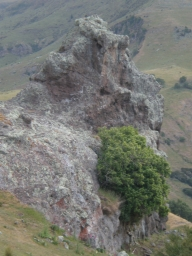
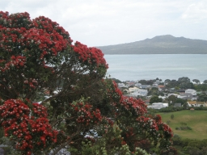
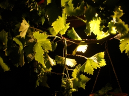

New Zealand and Australia, December 2008 – January
2009
- Christchurch and Auckland
- Queensland
- Perth
My sabbatical year, approaching its end, goes out with a bang, with a
six-week trip to the southern hemisphere.
I am a plenary speaker at two conferences: the 4th International Conference
on Combinatorial Mathematics and Combinatorial Computing in Auckland,
December 15–19; and Cheryl Praeger's 60th birthday conference (Groups,
Combinatorics and Computation) in Perth, 5–16 January. In addition I
will go to the 7th Australian and New Zealand Mathematics Convention in
Christchurch, the week before the Auckland conference. Christchurch was the
low point of my Forder tour in April, because
of a bug I picked up; it will be nice to give it another chance, and I am
hoping to see the Banks Peninsula on my free day there.
I will be on my own in New Zealand, but Rosemary will join me in Australia
(she is currently visiting Chris Brien in Adelaide) and we will go to Perth
where we are both giving big talks. She is also giving a short course in
the second week (aimed primarily at students).
Auckland and Perth are both paying for my travel. Auckland cannot reimburse
me for the cost, so they needed to buy the ticket. They made a splendid job
of my rather complicated itinerary, and kept me up to date with subsequent
changes, invoicing Perth for part of the cost. But on Wednesday, a bombshell
came. Because of the occupation of Bangkok airport by demonstrators, Qantas
has re-routed its flight via Singapore. As a result, it gets to Sydney two
hours later, and I miss my connection to Christchurch. The next is more than
eight hours later. So I have to spend a day in Sydney, and get to Christchurch
very late (and have to talk the following day). So I am a bit apprehensive!
But already it feels as if my leave is winding down. I have been mostly in
London for the last two months, seeing research students (and even
undergraduates), and the last thing I did at work was to put up a notice
on my door telling students when I will be back and when they can come to
see me.
5 December 2008
After breakfast I went for a walk. (It will be a while before I get any
exercise now; the other reason is to get a bit of down time so that things
I have forgotten to do will pop into my head.)
I walked my circuit around the Bow Back Rivers, about 13km.
The promised bad weather hasn't arrived; it was windless, cool but not cold,
with bright skylight on the horizon under light cloud. The London planes in
Stepney Green and St Dunstan's Churchyard were leafless, their twigs and
spherical seedballs silhouetted against the wintry sky; the lack of leaves
drew the eye to the mottled and wrinkled skin of their trunks.
In St Dunstan's Churchyard, a gardener pissed against a wall, in full view of
a woman walking round the churchyard. Once there was a time when gardeners
didn't wear Day-Glo jackets . . .
Across Commercial Road, there was a poster advertising a new Kit-Kat bar by
perpetuating the myth that all and only women eat lo-cal food. Into Limehouse
Basin, the posh flats like giant cruise liners moored just beyond the
gin palaces and canal barges in the marina. Onto the Limehouse Cut, where
a near-derelict dirty grey concrete block in the worst post-war style faced
a construction site, whose concrete skeleton seemed to mirror the colour of
its neighbour. A cormorant flew low over the water, where other birds
(mallards, Canada geese, black-headed gulls, coots, pigeons) fed in their
different ways. A crowd of noisy gulls fought over a crust; when they dropped
it, a coot sneaked in and grabbed it.
At Three Mills, the path meets Bow Creek. The tide was almost out; more
birds (including a cormorant with wings hung out to dry) were on the
mudflats, and an impressive flow of water came through the channel under
House Mill. On the Greenway, I noticed that the anti-metric fascists have
been busy here, defacing the pleasant green and yellow cast iron signs
with ugly white plastic squares giving the distance in miles less accurately
than it was in metres (to the nearest 1/4 mile rather than 10 metres). I do
resent this. When I used to run along here, the metric distances were very
useful for monitoring my progress.
The Olympic site is impressively busy on a weekday, with buses and excavators
moving all over the place. Hester is worried that it won't be ready in time,
but the base of the stadium is done and about a quarter of the girders
supporting the seats are up. Workmen were removing an elder near the railway
line. I don't grieve for the tree – elders are weeds – but I
noted the green method of disposal; instead of throwing the branches into a
bonfire they were feeding them through a machine turning them into fine mulch.
Round the Lea to the Hertford Union, otherwise known as Duckett's Cut. (Duckett
was a Hertfordshire man, also known as Jackson; a friend of Captain Cook, who
named Sydney Harbour after him, he changed his name to get an inheritance.)
Two swans were moulting on the towpath. I went up into Victoria Park on the
new cycle path past the Top of the Morning pub. It seems that Sustrans has
managed to get part of the pub garden for the path; it is no longer necessary
to go through the bar and buy a pint to placate the landlord.
As usual, the waterfowl on the lake expected to be fed; two Canada geese
importuned me. When I used to run round the lake training for the marathon,
I once saw a lady who had come in a taxi, which she had got to drive into the
park so she could feed the birds from her seat. (This is getting very
valedictory; I hope I am not getting a subconscious premonition that the plane
is going to crash.)
Returning to the busy Mile End Road, I went to my office, to read my email
one last time and do a couple of things connected with my talks. Maybe as well
I did. An urgent reference request; one from Ben Martin asking me to chair a
talk in Christchurch; two about the flight giving conflicting information
about the connection in Sydney. I printed the paper version of my Christchurch
talk, to have in my hand luggage, and put electronic copies of all my talks
on the web as a last resort. (I will have three electronic copies with me:
in the white toy, on an SD card, and on a memory stick.)
So I had lunch, tidied the house, and of course was finished far too early.
Even with all this time, it is most unlikely that I will not have
forgotten something.
Eventually, having recharged my soul with Bob Dylan songs, I was off. The
Ealing train was pulling in as I reached the platform, but at Barons Court
the train I wanted was pulling out as we pulled in, so I had to let three go
by before the next train to Terminal 4 came. While I was waiting, two trains
going in opposite directions both contained a lady with a very large bunch of
red berries.
At the terminal, there was almost no queue, so I got straight to a check-in
desk. I asked about the Sydney to Christchurch flight. The guy at the desk
sent me to the service desk, to check if there was a seat on the morning
flight; if so I would have to go to a booking desk to book it, he said. But
in fact the service desk sorted it all out for me. By this time the queue was
much longer; Qantas were in the process of taking over Kenyan Airways desks
(the Kenyan flight was about to leave), obviously expecting a big crowd, and
they sent us all round the houses. I got talking to the man in front of me,
who was an Australian being taken to Oz and NZ as a 75th birthday present
from his wife. He had been to Toowoomba, to play hockey, 50 years ago. It
didn't take too long, and I was through security with more than two hours
until the gate would even be announced.
6 December 2008
The flight boarded in good time. We were delayed a bit by other planes
manoeuvring at the gate, but were underway pretty much on time. The plane
was far from full, and I had a row of three seats to myself.
The choice of films was not outstanding, but there were a couple worth seeing.
I watched "Man on Wire" with my dinner, and then managed to get an hour or
two of intermittent sleep. By that time it was morning in Bangkok, so I woke
up and looked out the window. We were passing some brightly lit place on the
edge of water, I think the Azov Sea. Then it was dark again, with little to
see, so I watched "Shine", an excellent film which I didn't manage to see
first time round.
After that it was beginning to get light over the desert between Iran and
Afghanistan, so I looked at that for a while. But the stewardess came round
and told me to shut the blind. I am not with the majority of air travellers
on this – I think that daylight should absolutely not be wasted, and
we were coming into a region of extraordinary dry mountains, with a long
straight river valley looking as if it had been pushed out by a giant
bulldozer. This continued for a while but then the cloud built up and I
shut the blind.
I listened to a CD by Powderfinger, a group in which the son of my erstwhile
bandmate Graham Coghill plays: quite good but not the Beatles. But fortunately
they did have the Beatles, and we had now reached the point where they put
the cabin lights on, so I felt I could open the window and watch the view
to the soundtrack of the Beatles remixed.
The Ganges plain was covered by translucent cloud, with fluffy tops poking up
through the cloud layer and casting sinister shadows into the murk. But when
we got to the delta, the sun reflected bronze in the ponds and ditches. The
winding streams would light up like fast-burning fuses as we passed. Strangely,
the big branches of the river didn't reflect the sun at all. Was it filth
on the surface, or (more likely) wind ruffling the mirror?
Out to sea, and the clouds cleared and the quality of the reflection changed.
I am always amazed by how much otherwise invisible detail is revealed by the
sun reflecting off the sea: glossy and matt patches with sharp irregular lines
dividing them; waves, ripples, and sparkles; and shadows of small clouds like
huge irregular sunspots.
We crossed the coast of Burma at a point where there were many islands and
river mouths. The land was rugged and covered with green. But over the
mountains, we came to a country that could almost have been Australia: dry,
not much vegetation cover, long straight dusty roads. A big river with many
mudflats, meanders and oxbows, possibly the Irrawaddy. Then over its mouth
and out to sea again, and when we crossed the coast it was cloudy until
Bangkok.
We flew over the city, and out to sea, crossing back over the coast in a
region of banana trees beside ponds, rice paddies, and blue-roofed houses.
On the taxiway at the airport, I spotted three egrets in a pond.
The pilot managed to stop in the wrong place, and we all had to sit down
and put our belts back on while he reversed a short distance.
I suppose we were one of the first long-haul flights into Bangkok since the
airport re-opened. There were not many planes and not many people at the
airport. I had time to go to the loo, brush my teeth and wash my face, and
have a few minutes' walk round the terminal before it was time to board again.
|
Our plane was much more crowded; both the seats beside me taken by pretty
young girls. The one next to me is from San Francisco and had to stay an
extra five days in Thailand waiting for the airport to reopen, which puts
my troubles in the shade. We were away quite promptly. She sat down, asked the
stewardess for a glass of water, took a pill, and was soon out for the entire
flight.
From the ground, there were nice pink tinges to the clouds, but once we took
off we were treated to a spectacular view of orange, with fainter blue, green,
yellow and grey, gradually fading out.
|
|
7 December 2008
They were a bit slow serving dinner, and I had the dilemma of whether or not
to wait. It was better that I did, since feeling sleepy after an airline meal
and a bottle of wine is a conditioned reflex now. I got a good four hours'
sleep before the lights came on again. At one point, Toowoomba briefly
appeared on the flightpath screen.
Light came in over western New South Wales, but nothing was to be seen but
a layer of clouds, occasional holes giving a view of another cloud layer. Sun
touched the cloud tops just as we crossed the terminator on the flightpath
map. As we turned for Sydney, there was briefly a glory round our shadow on
the cloud layer, but soon we were in the clouds.
We emerged below the clouds to good views of the Blue Mountains, very bright
green valleys below dark green hills. Soon the suburbs of Sydney began, at
first scattered among the forest, later bits of forest scattered among the
houses. A glimpse of the back end of the harbour, and we were down.
Sydney is really one of the most unpleasant international airports in the
world, sad to say. I waited 50 minutes in the queue at the transfer desk,
just less than the fast bag drop at Rome. But here there was not just a single
reason for the slowness: staff didn't have codes for the airlines on whose
planes they were checking people in (including Jetstar, a Qantas codeshare);
the machine printing boarding passes didn't work; passengers were not on
lists, or on lists under their first name rather than surname, which the
staff had no power to change; the phone would ring, and one of the two girls
would answer it, leaving the person they were dealing with to fume;
you name it, it was going wrong. At a certain
point a supervisor arrived and seeing the situation, started checking people
in, but was no faster than the two staff already there. Meanwhile the queue
was growing alarmingly. At a certain point I told the supervisor that I had
been there for 35 minutes; she called me a liar. All this was happening in
what looked like a derelict warehouse. When the people in front of me (on the
same flight as I) arrived at the head of the queue they were told that they
had to queue somewhere else; Qantas staff couldn't check us in for a Qantas
flight. But when it was my turn, finally everything was actually working.
Then more fun; despite the "information" that the flight left from the same
terminal, we had to make a long trek to a place where we could take a bus
for an even longer trek to our check-in gate. We went up in a very dingy and
sinister lift which served four floors, no indication of which one we wanted.
Someone pressed 2; that was correct. This terminal was bright and new, and
so crammed with shops that passengers wheeling luggage were unable to
pass cleaning trolleys coming the other way.
After that the flight was something of an anticlimax. We took off on time;
the plane wasn't crowded, and I was able to move to the window seat without
disturbing anyone. We saw Bondi Beach and the Heads as we took off. After that
it was cloud most of the way, dazzling white in the sunshine so that I could
hardly look at it. But just as we reached the New Zealand coast, the clouds
broke up, and we had good views of the Alps (with quite a lot of snow,
strangely shaped bare slopes, turquoise lakes, and braided rivers) and the
Canterbury Plain (a chequerboard of fields, with the hedges and windbreaks
clearly visible – but also visible in the growing crops was the
older pattern of stream meanders).
We landed 15 minutes early and I got through Immigration and Customs quite
expeditiously, and found a bus to town. I didn't quite understand his New
Zealand vowels when he gave me some confusing explanation about why he
couldn't take me there; but it turned out that there was a bike race through
the centre of town, and the streets were closed. But it was a fairly
short walk (having to dodge the bikes crossing Cambridge and Oxford Terraces)
and I got to the hotel, checked in, and had a very welcome shower. I noticed
that my ankles were quite badly swollen – something that never usually
happens – as a result of the travelling and too-tight socks. (I should
have worn the free pair from Qantas.)
Afterwards, I went out into the bright day for a walk. On the way down I
discovered that it is impossible to get from the lobby even to the first
floor other than by lift; the stairs are really a fire escape and go out into
the street.
I went to the Cathedral square, in the opposite direction to the bike race,
and found that there was a procession of decorated floats and singing
schoolgirls going past. (I discovered later that it was the Santa Parade.)
So I couldn't cross over to a café I saw, and
there was nothing comparable on my side except Starbucks, where I won't eat.
I found the i-site (tourist information) and asked for walking maps, but
virtually drew a blank; there is nothing like the maps Auckland produces,
though there is more good walking here. I took what they had and went on my
way.
Eventually I found a very nice Belgian restaurant with real Belgian beer
(including Kriek). I went in and had a lamb shank (tasty, but not very big,
and very expensive for a country with forty million sheep) and a couple of
beers (reasonable, and very nice).
|
Then I walked out to the University, to see if anything was happening.
The route, which takes about an hour each way,
is by the river Avon and Hagley Park , and then on the road I remember from
last time past Riccarton Bush. The river was sparkling in the sunshine and
looking lovely. This is the nice part of Christchurch I missed last visit!
The most dramatic difference in vegetation from last time is the bottlebrush
flowers. There were many English birds (sparrows, blackbirds, thrushes,
mallards). I saw some Paradise ducks and was initially puzzled that they were
in groups larger than two. It turned out to be parents with a brood of quite
large offspring. I also heard a magpie carolling near the University.
|
|
As I approached the Academy Court Motel, from a distance I saw a grey and
slightly frail old mathematician and his wife come out of the motel. It soon
resolved itself into Charles and Mary Leedham-Green. They knew (which I didn't)
that registration was in the staff club, and of course I knew where that was.
So we got there quite soon and got registered. There was also one free drink
and very nice free finger food.
Many friends were there, both old (Don Taylor, Liz Billington, Cheryl Praeger,
. . .) and new (Gaven Martin, Kevin Broughan, . . .).
So I ended up staying until seven, though I found the standing quite tiring.
After the reception I didn't need more to eat, so walked back to town. By the
time I had unpacked a few things and typed up my notes, it was 9pm, a
respectable time to go to bed, I thought (though even then I was not
desperately sleepy).
8 December 2008
|
I slept well. When I woke up at about 6, the sky outside was quite cloudy.
I had a good breakfast (reading the forecast in the paper: heavy
rain this afternoon), and set out to the University. The walk
is in three stages, in increasing order of distance and decreasing
pleasantness: a lovely stretch by the river, with native plants and sculpture
(a rather risqué sculpture of two naked wrestlers, and a huge daffodil);
a park rather spoiled by a road carrying rush-hour traffic; and then a very
undistinguished suburban road crossing three major roads. But a different way
into the university cuts off some of the last stretch.
|
|
I hadn't realised last time that Oxford and Cambridge Terraces go along either
side of the river, until they reach the town, where the river turns away but
the avenues go on like regular straight roads. I imagine them having punting
races on the river with supporters of the two methods on either bank. I did
meet the family of paradise ducks on Cambridge Terrace. Since I had tried and
failed to get a picture of the male and female together in April, I thought
I would take advantage of the closeness brought about by family duties.
I was in good time for the morning session, which included three talks on
subjects I know little about but which informed and entertained me. The
highlight was a talk by Tony Guttmann, speaking (somewhat to his own surprise)
in the Geometry and Analysis section (the words Calabi–Yao occur in his
title). The probability generating function for a random walk reaching a given
site after a given number of steps is related to solutions of Calabi–Yao
differential equations. Thomas Prellberg got a name check.
Then I tried to use the computers. What a surprise: I logged in to a computer
in the terminal room, only to find that I couldn't use putty to
connect to London (though I could look at web pages); I couldn't use the
white toy either because, although they claim that there is a wireless
network, it is locked and the white toy won't open it. After last visit,
this is exactly what I expected, though I had some vain hope that they would
have sorted something out for such a big conference.
There seems to be an inherent contradiction in the wi-fi instructions for
unix. You need something called ienabler in order to connect, and
you have to get it by using telnet, which you can't use without
internet access . . . In any case the white toy doesn't have
telnet.
While I was trying it out, Bruce Craven saw me using a white toy and sat down
beside me. His is a different colour, and he has also noticed that other
companies have started making them. He got a version with Windows, not out
of any love for Bill Gates, but just because he thought it might be easier
to connect.
I went for lunch in the café in the Students Union, and then went
to the room to test the gear. As usual the white toy worked flawlessly.
Then I had a coffee with Kathy Horadam, at which she invited me to talk at
a meeting in Galway the week before the BCC. Cheryl gave a lovely talk, in
which she brought together the Kantor-type and algebraic group-type methods
for estimating the proportions of elements of certain types in
groups of Lie type.
Then it was my talk. I felt just a tiny bit flat, but managed to get through
on time and generate quite some interest.
Later I went to the group actions session, mainly to hear Michael Giudici
talk. During his talk, we noticed that there were five Oxford people sitting
in a row: Cheryl, Liz, Don, Marston and me.
After the talks finished we trooped back to Staff House for a drink. There
was light drizzle but the heavy rain had not come. The drinks were hosted by
the NZIMA; someone suggested that it was their farewell party, since they have
lost their government grant (a scandalous state of affairs). We each had a
ticket for one drink, but while I was queueing up, Marston slipped me two
spare tickets. Later, someone else tried to give me a spare ticket, and I
explained that I had good connections and had got two from the boss!
Birgit Loch was there with a decent SLR camera, and at a certain point we
decided that there should be an Oxford photo. As well as the five of us, there
was Charles, Mike Atkinson (whom we couldn't find at the crucial moment),
Peter Hall, and Jon Borwein. We swapped our dates in Oxford (Peter and Marston
were both Brasenose men, but it turns out that Peter was there in the short
interval I was in London; he was a contemporary of James Oxley), none later
than 1980. Birgit asked, where are our successors? Someone suggested Michael,
but of course he was my student in London.
Also, Rick Beatson asked me to chair a contributed session on Wednesday, in
addition to Angelika Steger's plenary tomorrow. I agreed, although it wasn't
the session I was most interested in; this comes of being interested in too
many things. Also Rua Murray told me that there is a way to get to the
University by going through Riccarton Bush, which cuts out quite a stretch
of boring suburban road (if I can find the way!).
I deliberately let the free buses to the city go without me, but eventually
set off with Don (who is staying at a hotel on the edge of Hagley Park that
I walk past). We had a good talk, during which he had a phone call from Jill
(who comes tomorrow). This may be the last phone call he gets; he forgot part
of his charger and the battery is nearly dead. He tried a branch down town of
the store where he got it, but it is such an old model that they don't stock
chargers for it any more . . .
9 December 2008
In the paper today, reports of carnage among trampers in New Zealand, including
an eminent botanist who probably had a heart attack crossing an icy stream,
a Japanese guide caught in a snowstorm on Mt Cook, and a woman crushed on a
trail by a falling boulder.
Also, I read that a team of researchers at Harvard Medical School have
defined "happiness". Their four-part definition includes "describing yourself
as happy", and they find that you are more likely to be happy if people aroud
you are happy. They don't seem to realise that there is a much simpler
explanation for this finding: the desire to conform!
Weather grey; the port hills are not visible this morning. More rain forecast
but it should clear later.
|
I set out a bit late and had to hurry. (Thinking about Kathy Horadam's
conference, I decided that I
could talk about Fatma's and Josephine's work, and immediately started
considering how to generalise it.) In Cambridge Terrace I met the family
of paradise ducks standing on the path. They were so tame that they didn't
move, even when I stopped right in the middle of the family group.
I decided to try to follow the directions for walking via Riccarton Bush
that Rua Murray gave me. The basic rule he said was to keep zig-zagging, and
he indicated that the first turn was to the left (which surprised me a bit).
I was in two minds about taking it in case I got lost, but in fact it
worked perfectly. The only thing he didn't say was when to stop zig-zagging,
but this is at the point where you come to a long straight road which runs to
a busy road (in fact the one past the University). So it all worked fine,
and reduces considerably the boring part of the walk.
|
|
The first talk was the plenary by Jonathan Borwein, about convex functions.
Again, it was a marvellous talk, full of enthusiasm and good stuff. I didn't
expect to get anything interesting from it, but one of his examples was about
functions of the k largest eigenvalues of a real symmetric matrix,
which may very well have some applications in optimal designs.
After that, I went to two talks on algorithms, one dire and the other by
Graham Farr quite good, and then ducked out of Gordon Royle's talk to go
and hear Patricia Cretchley talking about the USQ business. She warned us
that she might get emotional, but apart from controlled anger at the dean
(who had been brought in because she had already abolished mathematics at
Flinders) and the University administration (who were entirely underhand
about the whole business) it was remarkably calm and factual.
After the talk there was a discussion. I was
so dumbstruck that I couldn't say anything for a while, but right at the
end I decided to chip in with my experience. We have been through lean times,
and maths departments have folded, but now the situation is completely
changed; if the same happens in Australia and maths becomes a popular subject,
who will teach them if the maths departments have been demolished?
Afterwards, Birgit asked me to write up my comments for Maths Matters, and
Patricia asked me to lunch, where we had a long talk about this and many
other things.
From there it was straight to the afternoon plenary, where I was introducing
Angelika Steger. She gave a lovely survey of the story of random planar
graphs, which is only just over ten years old but already is full of rich
and remarkable stuff, including the Flajolet–Sedgwick notion of a
Boltzmann sampler.
No rest after that either, and a lot of skipping between
sessions: a really interesting
and well-presented talk by Beta Faller, a PhD student, about combinatorial
problems arising in conservation ecology (real mathematical problems too,
including greedoids, NP-completeness, etc), then Valentyn Godolets (not a very
good talk, but interesting stuff about geometric dimension of Borel orbit
equivalence relations, a combinatorial version of cohomological dimension),
then Arun Ram (on a generalisation of skew tableaux working on any graph,
giving representations of the Khovanov–Lauda alagebras), then again
Jonathan Borwein (on experimental mathematics).
There was a late plenary, by Karen Parshall, a public lecture on the history
of algebra. So time to eat beforehand. The usual cafés were shut but
there was a small Indian place open, so we (Gordon, Michael and I) went
and ate there, where we found Liz doing the same thing. Afterwards we all
went to the Staff Club for a beer before the talk.
I found Karen Parshall's talk a little disappointing, as I often do talks on
history of mathematics. It was read from a prepared script, some of which was
put up on the visualiser; apart from a simple Euclidean diagram, the only
visual aids were very grainy photos of algebraists. A couple of times she
read it wrong, and didn't even notice until a couple of lines later. There
was little that was new to me. The sub-theme was: why are high-school algebra
(solving equations) and research algebra (axiomatics) both part of the same
subject? I think my answer would have been a little different from hers.
After the talk, I walked back with Liz, who (it transpires) is also staying
at the Ibis but not doing breakfast. We had a bit of a hiatus when the door
to the building locked as we approached it, but the assembled intelligence of
many mathematicians finally managed to get it open. It had stopped raining but
the paths were quite wet; I found the way back through Riccarton Bush quite
easily. We had a nice companionable walk. On the way, we saw a rifleman
(a little bird with almost no tail), clinging to a stem of a plant, quite
tame; we were standing right beside it when we noticed it.
10 December 2008
It's not raining this morning, and the slopes of the hills are visible, but
the tops are swathed in cloud. The forecast says there will be sunny intervals
this afternoon. It also currently says Saturday will be sunny. I might look
for a map on Friday afternoon and see whether walking to Akaroa is at all
feasible.
I left earlier. On Cambridge Terrace the female paradise duck was chasing
a mallard away. I took a different route: at the end of Cambridge Terrace
I continued on and turned into the Botanic Gardens, having a very pleasant
walk on the other side of the river to the bridge near the tennis courts,
then across the park.
When I got to Riccarton Bush, I had enough time to go round the bush. It
was extraordinarily nice: drops of water from the recent rain sparkling in
the light on the dark green leaves of the native trees (whose names I have
forgotten); small brown birds (which I couldn't identify) flitting around
on the forest floor; and the lovely sound of birdsong ringing in the air.
The first talk was by Greg Lawler on a recent breakthrough in statistical
mechanics, connecting to conformal field theory. After the break I had to
chair a session. I wasn't planning to go to any of the talks in the session,
but I'm glad I did; they were all first-rate, and I learned something, not
least from Christopher Tuffley, who was finding a cell decomposition of the
space of unordered k-tuples over a given space. It took me back many
years. At the end of my time at UQ, I did a little project I'd invented
myself, about giving structure to the set of all k-tuples over a
set with a given structure of arbitrary kind. The case of a metric space was
exactly what he was doing!
After lunch, Vaughan Jones talked. Until he rolled the screens up to write on
the boards, I hadn't realised that there were no less than ten whiteboards
in that lecture room! He was as always linking disparate things; going from
integrals to evaluate the expected trace of a word in a given number of large
random Hermitian matrices, via von Neumann algebras, to non-commutative
geometry; underlying it all was the combinatorics of non-crossing paths.
Then it was time for the excursion. I had agreed with Cheryl that we would
go to walk on the Port Hills. On the way up I explained to her the current
state of play on the synchronization problem. (She won't actually get to hear
my talk in Auckland; she has to take her mother, who is not in very good
state for travelling, from Brisbane to Perth next week.) The weather had
cleared and turned beautiful; on the bus, a bottle of sunscreen was passed
around.
|
The bus drove out of town and up a steep winding road, and stopped at a small
car park at the Sign of the Kiwi. There was a lovely view over the inner
end of Lyttleton harbour and the hills beyond, where I hope to walk on
Saturday. Birgit (who was with us) started getting excited. Her hobby is
geocaching, and the machine was telling her that there was a cache nearby.
As we walked, we got further and further away from it.
We went through quite thick scrub, damp underfoot, almost like rain forest
(so the talk was of leeches) on Mitchell's Track, and came back on the very
different Cedric's Track, much drier, completely open (looking over the city),
with sheep on the short grass.
|
|
We got back to the bus a bit early and went a little way up the Crater Rim
Trail, which was the right direction for the geocache. So Cheryl and I joined
in helping Birgit look for the cache; in fact I spotted it. We were back to
the carpark in time to celebrate with large ice creams before returning.
Back on the bus, I decided to go back out to the University and have a drink
with Cheryl in the Staff Club. George Willis, who had been sitting with us
on the bus, came too. We swapped a lot of stories about bureaucrats, interview
panels, visits to Iran, etc. After a couple of drinks we went to eat at the
Tandoori Palace just down the road, then said our goodbyes and I walked back
into town.
11 December 2008
The paradise soap opera continues. This morning, the male parrie was standing
all by himself on the path, looking rather forlorn.
I walked through the Botanic Gardens again. Sprinklers played on the grass
everywhere; in the rose garden, the roses were in bloom, filling the air with
perfume; in a small patch of New Zealand bush, a fantail energetically and
acrobatically chased insects.
The first lecture was by James Sneyd. Last time I saw him, his hair was blue;
it is now ginger, unless it is a wig! As I expected from him, a wonderful,
extrovert talk, enlivened by such slides as a picture of a mouse with a big
arrow to a picture of a blender (or a breadknife, on a later slide).
After the break, I went to Vince Moulton's talk, a very nice exposition of
trees versus networks in phylogenetics. It seems that in this area, things
may be fairly simple; conventional evolution leads to trees (with perhaps
just a little bit of noise); recombination, such as viruses practise, leads
to definitely non-treelike tight spans. He has developed a statistical test
of the null hypothesis that the data is explained by a tree, and can actually
come up with p-values, which the biologists like (though based on a
statistic for which he gave no theoretical justification and for which nothing
is known about its distribution, so he has to bootstrap). He also told me some
good news about Taoyang.
I ducked out of the next few talks and made another attempt to read my email.
I drew a complete blank. I tried connecting to different computers, and
tried telnet rather than ssh, all to no avail. With
telnet, I was challenged for username and password to get through a
firewall; a message said I had been accepted, but then the window disappeared
and nothing followed. So I am virtually certain that the problem lies in
Canterbury rather than London.
So instead I did some research for my planned Saturday walk. There is a good
bus service to Lyttelton, and a ferry every hour to Diamond Harbour, but only
one bus a day to Akaroa. So I either abandon Akaroa, or start there and walk
back. Tentatively planning the latter, I have booked a seat on the morning
shuttle to Akaroa, got times of buses and ferries (which go on quite late),
and bought a reasonable map (1:175000) from the bookshop (at Ben Martin's
suggestion).
I had arranged to meet Graham Farr for lunch. Not finding him, I got a sandwich
and sat in a conspicuous place to eat it. Liz came along, and we arranged to
go on the gondola tomorrow after the conference finishes. Then Graham came,
and we discussed how to write up the chromatic roots paper without restricting
Kerri Morgan's freedom of action. Graham had her data with him; it seemed from
our quick look that she has no examples with Galois group of order 3 or 5.
I have three examples for order 3, but none for 5.
Charles showed up and joined in, so the discussion went to more general things,
such as whether there might be a connection between the Galois group of the
chromatic polynomial and the automorphism group of the graph. I suspect there
may be a negative correlation. We also considered other one-variable
polynomials for the same treatment, or even the two-variable Tutte polynomial
(where conceivably one might do some interesting algebraic geometry).
After lunch John Morgan told us about Perelman's proof of the Poincaré
conjecture. He did a very good job of explaining exactly how he went beyond
what Hamilton did.
I wasn't too busy in the afternoon since both the Aussies and the Kiwis
had meetings. So I went for a walk round Ilam Gardens. The rhododendrons were
mostly over, so the predominant colour was green. A flock of greenfinches
fluttered in a lemonwood tree.
I changed for dinner, and met Marston coming out of his meeting. He had just
proved a theorem, so after he had been to his motel to change, we went over
to the Staff Club for a celebratory drink before the conference dinner.
The dinner was 7 for 7:30, but when we arrived soon after 7 everyone was
already seated and about to begin the first course. We were invited to sit
on the AustMS table, since they were a few people short. So we sat with
Cheryl, Hyam Rubenstein and his wife, Peter Hall, Liz, and various others.
It was a nice dinner though a bit slow (tables were called up one at a time
to the buffet). There were a few speeches and prizes, but mostly we had a
jolly time. Four of us at the Ibis left, not too late, to get a taxi back to
town.
Back in my room, I decided to pay my money and read my email. There were the
proofs of a paper, a day overdue already; a reference request; several
refereeing requests; photos from Marie of Rob's graduation; and so on.
I worked like crazy and was able to get through nearly a hundred emails by
bedtime.
12 December 2008
In the morning I fetched the proofs of the paper and had a cursory look at
them. They seemed to be OK so I simply approved them. I also looked at the
photos of Rob.
|
It was grey and drizzly, though the forecast for tomorrow is better. I met
the family of paradise ducks crossing Cambridge Terrace (the non-busy part).
The parents gently but firmly ensured that the three children were lined up,
and then marched cautiously across, mother in front, father behind.
I took a different route through the botanic gardens, leaving by a different
bridge (which turns out to be the main entrance). The glory of the Christchurch
Botanic Gardens is its very fine trees, both English (plane, horse chestnut,
lime, beech) and other (eucalyptus, cedar, sequoia).
|
|
Charles gave a splendid and absolutely characteristic talk about the matrix
group recognition project, and ended it with a rant about the ranking of
journals by bean-counters. His proposal is that we should submit papers to
journals we respect which are not top-rated. This caused quite a lot of
discussion.
After the break, Marston attempted to give a talk from his laptop with two
big jobs running in the background; it didn't work, and after some fussing
around he had to kill the jobs. Another speaker later was completely unable
to get his Vista laptop to talk to the data projector. He has to borrow another
laptop and started ten minutes late.
After lunch, Rob Akscyn wanted to show me his ideas about refining Mertens'
product formula for primes to get rid of the unwanted constant factor, and
about getting a probabilistic estimate for the number of representations of
an even number as the sum of two primes. One of the interesting things about
it was that he has a program which allows him to use the screen of his laptop
like scribbling paper; he can draw (with straight line segments) and type,
and move and recolour things arbitrarily, so that diagrams can be changed
as the argument proceeds.
I walked back to the hotel, through the Botanic Gardens again, taking yet
another route, past a very nice bunya tree, and out to Cambridge Terrace where
the paradise ducks were resting on the grass, and a black cormorant sat on
the riverbank. I arrived back about 3, to find a message from Liz to say that
she had already left on the trip to the gondola. So I put my laundry on and did
a bit of work while it cooked, and left her a message suggesting dinner when
she got back. But she had bought a picnic to eat in her room; so I went out,
had fish and chips and bought lunch for tomorrow, and worked until bedtime.
Now I couldn't get an ssh connection, so I started some of the
reading I have brought with me.
13 December 2008
The day dawned with broken cloud but no rain; the forecast is still promising
some sunshine later, but the front page of the paper reports another party of
climbers missing on Mt Cook.
By the time I had gone down into Cathedral Square to catch the Akaroa Shuttle,
the clouds had completely cleared and it was a sparkling clear morning, with
long shadows across the square. The shuttle arrived and I got on and bought
a single ticket. We set off pretty much on time.
|
The Banks Peninsula formed as an island around ten million years ago with the
eruption of three huge volcanoes. The sea broke down the crater walls of two
of them and flooded the calderas, forming Lyttelton and Akaroa harbours.
(Akaroa is Maori for "long harbour".) Apart from the sea inlets, both
harbours are surrounded by high mountains rising to over 900 metres in places.
The bus started out skirting round the Port Hills (which surround Lyttelton
harbour), and then went up a valley and climbed the crater of the Akaroa
hills, reaching a pass at about 550 metres and then descending to the harbour.
|
|
|
The first stretch was between the Port Hills and the Canterbury Plain. After
a while, we saw Lake Ellesmere on our right, a large lake (New Zealand's fifth
largest), separated from the sea by a long spit. It is said to be a haven
for hundreds of thousands of waterfowl, but we were too far away to identify
any. After passing the end of the spit, we came to Lake Forsyth, a land-locked
arm of the sea supporting a large colony of black swans. We drove up by the
side of the lake, with good views of the swans, to Little River, once the
railhead but now an arts and crafts town. Soon we began climbing the crater
rim to Hill Top, where we got our first view of Akaroa Harbour (and the
driver stopped for us to take photos). My path would take me within spitting
distance of Hill Top; I was to learn that from a short distance along the
Summit Road, it was possible to see the harbour heads and out to sea.
|
|
|
We descended to the harbour; the road followed it round, going over headlands
because they were too sheer for it to follow the water. Finally we arrived in
Akaroa, where I got off at the first stop to reduce the road-walking part very
slightly. I did go down to the water to take a look. Akaroa was settled by the
French, but the British had sent a small garrison five days earlier just to make
it clear to them that they were in a British colony; the streetnames and
old buildings do reflect the Frence influence.
The first 10km or so of the walk involved retracing the road the bus had taken.
Though it is a main highway to a popular tourist destination, it was
fortunately not too busy, and the verge was just wide enough that I didn't
have to dive into the bushes very often. There were good views of the harbour
and surrounding hills. A female paradise duck called out beside a small pond.
|
|
|
The sun shone through broken clouds, though there were signs of more serious
clouds on the horizon. Birds sang their melodious songs, and larks trilled
overhead (this was a feature of the whole day). The roadside had a surprising
amount of scarlet pimpernel, as well as sweet fennel.
After an hour and a half, with three
substantial climbs, I had reached Duvauchelle, an old village named after an
early settler. The serious climbing was about to start, and it was time for
the sunscreen, so I stopped at an organic café in the old post office
and had a chicken and brie sandwich and a cup of coffee. The tide was out and
the view from the café was over mudflats stretching a long way out from
the road.
|
|
Then the climbing began. The main road went up over yet another headland
(connected by a thin strip of land to a near-island which was apparently the
core of the volcano). At the top, the Pigeon Bay Road turned off, and soon
my path turned off that, on a gravel road just called "Stock Route". It went
steadily up until it met Summit Road, the scenic (but longer) route to
Akaroa. This gravel road gave a panorama of the inside of the crater wall
with a harrier hovering over it, and farmed deer running far below.
From the top, I could see over the other side to Pigeon Bay, an
inlet with lovely clear turquoise water. The road went along a ridge with
views of Akaroa Harbour on one side and Pigeon Bay on the other. There was
very little traffic.
|
Just before Hill Top, my path turned off up a mountain. It was signposted
to Port Levy Saddle, and none of the places on my map were mentioned; but I
felt pretty confident that it was right, and turned off the road.
The track climbed fairly steeply, in damp bush with a lot of big stones
which required some serious scrambling in places. Every now and then the bush
cleared and I had ever more spectacular views of Akaroa harbour. Finally, after
a last effort, I reached a saddle on the ridge; the path took me along the
ridge to the next peak (there were several rocky tops), and then I could see
over the fence the orange marker posts descending. So I bade farewell to
Akaroa, climbed the fence, and descended.
|
|
|
For a long stretch, the path followed a ridge rising to several high mountains
– Mt Sinclair (841), Mt Fitzgerald (826), and on beyond where I went,
Mt Herbert (920) and Mt Bradley (855) – and none of these were scaled by
such a steep path as the first un-named mountain; so there was not as much
climbing as there might have been, but still it was quite hard going. But
astonishingly beautiful. The slopes were quite open (as a result of the early
timber-getting and clearances for sheep), giving
stunning views to some of the many sea inlets biting deep into the peninsula,
including Pigeon Bay, Port Levy, and Lake Forsyth.
|

|
|
Occasional patches of native bush remained, with no really large trees, and
sheep and cows. Larks sang overhead. Strange bushes, like folk deep in
conversation, grew on the ridge top. The hills were decorated with bleached
bones of the native trees that had been felled or grubbed out, and once a
bleached skull of a sheep. At one point a hare ran ahead of
me on the path, a bit like a small dog.
|
|
On one lovely stretch just after Mt Fitzgerald, I met three walkers coming the
other way, the only ones I saw all day. They were walking to Pigeon Bay, and
would turn downhill just before the un-named mountain near the Summit Road.
They were slightly worried about whether I would get to Diamond Harbour in time
to catch the ferry; I assured them that the last ferry was at ten past eleven,
and they agreed that I should make that.
Past the signposted Port Levy Saddle, the path started climbing again, towards
Mt Herbert. I had planned to climb this mountain and take a trail down from it
to Diamond Harbour, but by this point my legs were getting quite tired on the
uphill stretches, and I had to keep dosing myself with chocolate. Also there
was an error in the map; according to the map, my proposed route followed the
Monument Track for a short way, but in fact the two trails deviated right from
the point they met, with the Summit Trail going quite steeply up, so I opted
for the Monument Track. With hindsight, a lucky decision!
|
Just after the fork, I sat behind a boulder (a cool wind had got up by this
time) to have some bread and cheese and a very juicy pear. I nearly left my
glasses behind when I continued! But the path degenerated (the only stretch
the whole day where it was in less than immaculate order) to a sheep track
through the gorse (sometimes literally) and across a bog where a stream seeped
out of the mountainside. Further down the stream, I could hear the repetitive
melodic call of a bird.
The path improved again after the top of the hill, where I had the first sight
of Lyttelton Harbour, with a giant cruise liner moored at the wharf.
|
|
|
Then, rounding a corner, I caught sight of the remarkable monument-shaped
mountain after which this track is named. (From further along, it didn't
have quite the same dramatic shape.)
The land was becoming more level, with farm buildings ahead; in absence of
waymarking (which was very good on the Summit Trail but nonexistent on this
one) I went through the farmyard. The track took me through a herd of cows
with calves and a serious-looking bull, and out onto the road from Diamond
Harbour to Port Levy at its highest point.
|
|
|
I started down the hill. I had seen "Lion's Head Rock" marked as a tourist
attraction on the map, and soon I saw its unmistakable shape, mane, back and
all. As I got closer and could see the detail, the illusion got weaker; but
when I passed it and looked at the profile from the other side, it looked
(in a rather different way) like a lion again, staring across the valley.
The road wound down the hill, with good views over the valley. The floor of
the valley was dotted with kanuka (white tea tree) in flower, looking like a
slightly paler version of an English park in hawthorn blossom time. Looking
back, I could see a bank of clouds settled on the high path that I might have
taken, and beginning to spill down the side of the mountain.
|

|
|
At the bottom of the hill I came to Purau Bay, with a fleet of sailing boats
at anchor. The road ran round the side of the bay to Diamond Harbour. I knew
that it would be touch and go whether I would catch the 7:10 ferry or have an
hour to wait for the next. But by making a lucky guess about a footpath, and
running down the hill, I arrived on the wharf at about 7:05, and in a few
minutes the fast Black Diamond boat could be seen flying across the water
towards us, and the fishermen on the wharf reeled in their lines.
|
|
The ferry took us swiftly across to Lyttelton. The cruise ship had left
– we could see its back end steaming out to sea – and there was
a large container ship being loaded, and several smaller ships including one
from the Ukraine. I got off the ferry and walked towards the town; as I was
starting up the bridge, a bus arrived, so I retraced my steps and got on.
It left almost immediately, and I was back in Christchurch well before 8 and
still in bright daylight.
I was thirsty but not very hungry, so I went to a somewhat up-market pub. They
asked me if I wanted to eat and then proceeded to tell me that I couldn't
(even though plates of food were coming out). I will never know whether I was
too scruffy or what. But I had a couple of beers and then went back to the
hotel, where I ate the rest of my bread and cheese and went to bed.
14 December 2008
I had breakfast, packed, and checked out, leaving my big bag in the hotel.
Then I set out for a last look at Canterbury.
I went first to the Art Gallery, where I spent a happy couple of hours. There
was an exhibition by the Australian artist Fiona Hall which was particularly
striking. To choose just one (my favourite) from her pieces: "When my boat
comes in" consisted of many (maybe 50) pictures, each a very detailed leaf of
a plant, painted on old banknotes; I thought first that the leaves were pressed.
The commentary points out that each plant is associated with the country of the
banknotes it is on, and each banknote features a ship or boat; so the whole gets
an extra dimension, as commentary on the relationship between plants,
international trade, annd colonialism. But you don't need to know that to
appreciate the beautiful individual works, and the massed effect is very
striking.
I went round the galleries of more traditional art. Nothing particularly
famous, but this meant that one has to take the paintings with an open mind,
and there were some quite notable resonances, in particular the Victorian
attitude to sexuality in a couple of understated prints.
I crossed over the street and came to the Arts Centre. Occupying the old
buildings of the Boys' and Girls' High Schools and the College, this is
a collection of stalls (from serious art galleries to Christmas kitsch)
stretching a block along the street. I went round some of the outdoor stalls
but wasn't tempted to buy anything.
|
By then it was lunchtime, so I went to Coffee Corner (in the old Boys' High
School, a building with a fine staircase) and had a chicken and mushroom wrap
with salad and a ginger beer. Afterwards I walked on through the rest of the
complex, and then across the street to the Botanic Gardens, where I gently
perambulated with frequent spells to sit and enjoy. I saw a lancewood just
changing from juvenile, with heavily armoured leaves lying flush to the straight
trunk, to adult, with a more treelike shape beginning to form at the top.
|

|
Finally, back along the river, where the huge daffodil in the park had
mysteriously disappeared, and the paradise duck family were cropping the
grass in Cambridge Terrace, to the hotel, where I picked up my bag (stopping
briefly in the bookshop where I bought the biography of Donald Coxeter).
I took the "Five dollar bus" to the airport (actually seven dollars since,
like a proper airline, it has a "fuel surcharge" – cheeky!). I was at
the airport too early, so read for a while before checking in.
After check-in, it was all very straightforward. We left right on time;
there were views of the northern Canterbury Plains crossed by braided rivers
and interrupted by rugged hills, before we were above the clouds. A small
hole in the clouds showed us rugged green land before we started descending,
crossing the two mouths of a big river (presumably the Waikato) and black
sand beaches before turning over the mud-flats of Manukau harbour and coming
in to land.
Disembarking from the plane, I saw Nick Wormald and his wife, and we took a
taxi together to the hotel. The Quadrant impresses me just as little as last
time. At least they had a room for me this time, but they thought I was
leaving on Friday rather than Saturday; it took many attempts before I could
get my swipe card to work the lift; and the only power points in the room are
by the sink, so using the computer would create a hazard for anyone else in
the room.
I went out to look for any kind of registration or reception on the campus, and
drew a complete blank. So I went back to my room to see if any of the pieces
of paper I brought give any clues, and drew another blank. So I guess it is
a case of starting early enough in the morning to do a more thorough random
walk . . .
15 December 2008
I slept badly, and woke much stiffer than yesterday. I discovered that the
shower door doesn't close properly. Another gripe about this hotel: no
information! Eventually I found some details (e.g. checkout, how to make a
phone call, how to get to the airport) in a section "Frequently asked
questions" tucked in the back of the room service menu. I guess they are
frequently asked because the information is not available. Nothing about
mealtimes, laundry, etc.
From my window on the 15th floor, there is not much to see except other
high-rise buildings round about; but there is a glimpse of the park, with
the pohutukawa trees in flower.
I went down to breakfast at 7, to find cereal and fruit laid out, so
I served myself. (In Christchurch I had the cooked breakfast, but here I
won't be walking 12km a day, so continental is quite adequate.) Sasha
Barvinok came to join me. We were able to put together some partial
information. He could tell me that I am giving the first talk of the meeting,
and I could tell him where the mathematics department is. We agreed to meet
at 8:15 to go looking for the conference.
Jut before 8:15, Chris Rodger showed up. He said that you get to the
conference by going past Government House and through the hole in the wall.
There were a lot of mathematicians in the foyer looking somewhat bewildered,
but at the end of the building we found a rudimentary registration desk just
setting up. We also found the room for the talks, so I was able to sneak in
and get my equipment working before the opening ceremony.
My talk went well except for two things. Firstly, with too much material, I
went slightly over, and had to cut a bit – not too serious since I got
into that pickle by spending more time on explanations. Second, in a couple
of places I had made the inevitable mistake, and confused the various
properties (synchronization, etc.) with their negatives. But since I had
spent a lot of time on the explanations, not too much damage was done.
In any case, as I was first, Cheryl did get to hear the talk after all.
Before the talk, Charles Little, Mike Steel and I (the judges of the student
talks) had had time for a brief discussion, so that at least I knew where
I had to be after the break. But during the fifteen-minute break, I also
was asked to chair the first student session. It was a mixed bag: two
phylogenetic people from Canterbury, a Japanese with poor English, and a
very enthusiastic Australian whose favourite word was "awesome".
I had lunch with Michael Giudici, who told me both about his very recent
promotion,
and his nearly-complete work on classifying almost simple 3/2-transitive
groups (which would give as a by-product the classification of the QI groups).
After lunch I tried to read my email, but couldn't; it seems that there were
problems with the server (or possibly the Queen Mary computers), since I
easily connected to the wireless network. Later it worked OK.
In the afternoon Cheryl gave another lovely talk, and then I had four more
student talks, followed by some really nice stuff (a lovely theorem, but
full of unexplained mysteries) from Ian Wanless, joint work with Nick
Cavenagh. (Nick, by the way, has a job at Hamilton; Kevin Broughan had told me
how pleased they are with their new appointment.) After that was the CMSA
meeting. Ian had persuaded me to stay for it and act as scrutineer for the
elections. Fortunately there were no contested elections, but there was an
extra nomination from the floor for the committee.
Then quite a large group of us, mostly Queenslanders, went to the
pub, the Old Playhouse, just down the hill. We found a long table big enough
for the whole party (the huge pub was practically empty), with a huge lion
chair at the end; the party proposed that I should sit in it, since I had
opened the conference. I had some very decent beer (Speights Old Dark) and
a steak and mushroom pie, before heading home. I saw Liz to her hotel and
then got a bit lost in the maze near the University before finally getting
to the Quadrant.
16 December 2008
|
Next morning I found Sasha at breakfast again, and over the meal gave him a
little tutorial on Latin squares and finite geometry. I went out good and
early and walked to the conference through Albert Park, where I renewed my
acquaintance with the remarkable pohutukawa and Moreton Bay fig trees that
grow there, and found a fairly good pohutakawa in flower (though others were
by no means fully out yet). Then there was time to submit a reference to
MathJobs before the lecture (a slightly tedious business involving
copying the file to London, compiling the PDF, and fetching it back to check
and upload it).
|

|
The first talk was by Mike Steel, a very good overview of a lot of the
phylogenetic material I have heard last week and this. Then the next batch
of student talks. I went off for lunch with Marston and Steve Wilson; we
took it to the maths common room, and joined in the communal and slightly
competitive crossword solving. Marston beat me but I was ahead of Steve (who
was slightly annoyed by "self-raising flour", which is "self-rising flour"
(a more logical name) in his language.
After lunch, I started on my email but was not very far down the pile before
it was time for Chris Rodger's talk. I was very sleepy and nodded off a
couple of times; I am not too fascinated by that stuff anyway. Then the
final set of student talks, and a nice talk from Keisuke Shiromoto, who has
found 22 disjoint copies of the Witt design (a world record, beating the
previous 15). After this, the judges conferred to decide the winner. We got
very quickly to the top three, and without too much sweat to the top two, but
then had a lot of difficulty separating them.
When I came out, Michael, Thomas Britz, and Olli Pottonen were standing
round, so we went down to the pub. A bit later Don Taylor joined us. We had
a couple of pints and a meal, and then all dispersed to our hotels.
17 December 2008
At breakfast I found Sasha Barvinok and Doron Zeilberger sat together at a
two-person table. I sat nearby and joined in the conversation.
I was at the University early enough to read my email and upload another
reference before the talks began. We started with two plenary talks by
Paul Seymour and Maria Chudnovsky, reporting different bits of their joint
work: Paul on a weak form of Hadwiger for graphs with independence number 2,
and Maria about packing seagulls into a graph (also motivated by Hadwiger-like
things; a seagull is just a path of length 2).
At coffee time I met Judith Egan, who had written to me some time ago about
the Encyclopaedia of Design Theory. We had two further talks, one another
Hadwiger-inspired result, and one by a guy who has developed a graphics
package for LaTeX. Once I would have been delighted by this, but now, since
it uses PostScript, I fear that I won't even take the trouble to try it out.
The afternoon was for excursions, but I had decided to make my own excursion.
I had read that Devonport and the North Shore beaches were nice, but it was
probably a bad decision; too much road, not enough waymarking or accurate maps.
I walked down town and asked at the i-site for a map. They didn't have one,
but told me that the i-site in Devonport might be able to help. So I got a
ferry ticket and a sandwich, and was on my way (half an hour before the
excursion to Waiheke left). At Devonport, I asked at the i-site; they loaded
me up with maps for short walks around the town, but I found that they had
a decent map, for which I was happy to pay five dollars.
|
I walked up the first volcano, Takarunga (Mt Victoria), along the shore,
and over the shoulder of the second volcano, North Head, which brought me
to the beach. From there on it was about one quarter path (on the beach, on
a concrete path under the cliffs, or picking my way over hard sharp volcanic
rubble) and three-quarters road, usually very busy road at that. After a while
a path shown on the map didn't exist and another had been closed, so I gave up
and walked back from Castor Bay past Lake Pupuke to Barry's Point and Akoranga.
|

|
|
Yesterday's paper had an article saying that the pohutukawa flowers were at
their best now. I don't believe this; there were far more buds than flowers,
and I found the red colour difficult to photograph, despite many attempts. But
the flowers were much more dramatic here than in Auckland, and gave an exotic
appearance to the beaches. There were also various other flowering trees, such
as jacaranda, and other flowers such as morning glory past its best.
|
|
|
What there was of the beach was quite pleasant, with colourful shells (pink,
yellow and brown) and views out to Rangitoto. The volcanic lava had at one
point covered an ancient forest and fossilised it; there was what looked like
a well bored down into the hard lava but was in fact where a huge kauri had
stood when it was engulfed by the lava. I also saw what presumably had been
a horizontal log, looking a bit like a cannon. The roads, on the other hand,
had no sea view at all because of the expensive houses built on the shore and
cliffs.
|
|
|
I saw very little of Lake Pupuke; almost the entire shore is privately owned
and has been built on without any gaps. There was one small park at the south
end where there was an old pumping station, now a theatre. The lake was quite
choppy, and black swans, greylag geese, and a few mallards surfed the chop.
I heard what sounded like a tui gearing up to perform, but it never really
got going.
One of the best bits was almost at the end: a path beside a large mangrove
swamp at Barry's Point leading almost to the harbour. At the end of the path
I found a bus stop and waited there for a while, but no bus came. So I looked
at the map and found I was quite close to Akoranga station on the guided bus
route. So I went there and had only a short wait for a bus.
|
|
In town, I went to the Waterfront Café and had battered orange roughy
for old times' sake (it was very crowded), and then walked back to the hotel.
18 December 2008
The day was bright and warm, the campus lovely with trees, flowers, sun on
the cream weatherboard of Old Government House and the white limestone of the
Clock Tower, and resonant cries of birds. I arrived in good time to read
my email before my talk, but discovered I'd forgotten the piece of paper
with the password on it, and had to go back to my hotel room for it –
the password was on the back of the programme, and today for the first time I
have to make some decisions! (On Monday and Tuesday I was in the student talks
and on Wednesday there was only one stream.)
On getting back there was still time to look at my email which included
preliminary RAE scores from Dave. The full information is released at lunchtime
today.
Doron Zeilberger gave a deliberately provocative talk, shouting at the top of
his voice for an hour. He said that it is bad manners to use a laptop in a
talk (with which I agree), and threatened to throw out people doing this
(with which I disagree). He claimed that his theorem, in which the computer
proves a counting formula by finding a recurrence relation which takes 234
pages to print out, is "deep" and more worthwhile than a proof from Erdős'
"book", mistaking Erdős' criterion of elegance for shortness. (The
Classification of Finite Simple Groups is a theorem not fitting his paradigm;
I will ask him about this if I get a chance.) I am all for provocative talks
but I don't feel compelled to agree with the opinions expressed!
Afterwards, I went to three talks in one room, and then went looking for the
other, but failed to find it (not having been there so far during the meeting).
I went to the Relax Lounge for lunch, had a bacon and avocado sandwich and
a passionfruit frappé, and sat in the sun eating it (as after my
coast-to-coast walk in April). Then I went and stared a bit longer at the
RAE results. We did fairly well, I suppose.
After lunch, Jan de Gier talked about a more general form of plane partitions
where there is a hole. He comes from the physics community, and apologised in
advance for the fact that much of what he said would not be familiar to us;
then he proceeded to go rather fast, so that even I was lost (and I am closer
to that stuff than many people in the audience).
Following the contributed talks I met up with Graham Farr and Kerri Morgan to
talk about the chromatic roots paper. We were a bit rushed since we had just
been informed that dinner was not 6 for 7 as we'd been told, but 6 for 6:30.
I will send Kerri a short account of what more might be done on this problem,
and she will start writing up the data on small graphs. Then I went back to
the hotel, changed, and hurried down town for dinner.
Dinner was at the Harbour View, a moderately grand old restaurant upstairs
in the Ferry Building on the wharf. I arrived just after six.
In fact we needn't have worried; the restaurant was not at all fast. We were
issued with three drink tickets when we arrived; I had finished one and started
on a second before we sat down, so had to drink very slowly for the rest of the
evening! Tasty food, though. I was surrounded by people with food allergies:
dairy, eggs, alcohol, . . .
After people started moving around, I had a long chat with Graham, mostly
about common acquaintances; he says that Jacinta is flourishing. Then I went
back to the hotel. As I started towards the lift, I reached for my card, and
discovered I didn't have it. I was pretty sure I had had it when I set out,
so I walked back to the restaurant and asked, but they hadn't seen it. So back
to the hotel, where after checking ID they issued me with a new card. It turned
out that I had taken it out of my pocket in the bathroom (for some unknown
reason) and left it beside the washbasin.
19 December 2008
The day dawned sparkling and clear, but by the time I had breakfasted and
headed for the conference it had clouded over. The forecast is for rain
tomorrow.
The first talk was an astonishing talk by Jesús De Loera. In a nutshell:
many graph theoretic problems (such as existence of cliques or colourings of
given size) are equivalent to the existence of solutions of certain polynomials
over algebraically closed fields. Then Hilbert's Nullstellensatz gives a
certificate for the non-exstence of such solutions. One can bound the degree
of the certificate, and then search for its coefficients by linear algebra.
This gives algorithms which may be competitive with commonly used algorithms.
Moreover, he remarked in the last few minutes that the existence of symmetry
cuts down the size of the matrices (I think, by a factor close to the reciprocal
of the group order). It would be stunning if we could prove certain groups
non-synchronizing by this method!
After coffee, we went straight to the second invited talk of the day, by
Nick Wormald, on the chromatic number of random regular graphs, where for
fixed degree they now know that it is almost surely one of at most two
consecutive values.
Then we had two nice contributed talks, by Michael on quotients of geometries,
and by Don on unitary reflection groups (which tied in well with the things
Rob had been talking about in the Monday seminar). At the end of Don's talk
we headed off to the Maths Department Christmas lunch, with lots of friends
and acquaintances from my last visit, together with some serious discussions
with the retiring dean. There was wine from the University vineyard on
Waiheke, which we had passed on our walk there on the last trip.
The last invited talk by Sasha Barvinok was an eye-opener. There is a heuristic
that in a random contingency table (matrix of non-negative integers with
prescribed row and column sums) the row sums and column sums are approximately
independent. This is true for sparse matrices, and also if the row and column
sums are constant; but he showed that it is "false in all other cases", and
that indeed the prescribed row sums and column sums are very strongly
positively correlated. (The paradox is explained by the fact that this is rare
if the row and column sums are not close to constant.) But, bizarrely, the
same conclusion holds for zero-one matrices with prescribed row and column
sums, but the events are strongly negatively correlated! Much mystery here.
Then some nice contributed talks, and the end of the conference. Marston had
told me that there were strawberries and champagne in Old Government House,
so after saying goodbye (or in many cases au revoir) to many people,
I wandered over there. I found Marston, Eamonn, Charles, Mary, and Sasha.
As we sat and talked, various people went and more people arrived, but after
about an hour the end came and we all said our goodbyes and left.
I went back to the Engineering building in the hope of reading my email one
more time, but it was locked. I am too tight-fisted to pay money to read it
in my hotel room, so I decided that it will have to wait. I have plenty of
work-related reading matter, so I went back to my room to work.
20 December 2008
|
I slept badly. At breakfast I found Sasha indulging in a cooked breakfast,
which I have to say looked rather nice. Afterwards I went back to my room,
worked for a while, then checked out. I walked along Princes Street past the
fine wooden verandas of the old buildings there, through Albert Park one last
time, down past the kauri tree, to the airport bus stop.
|
|
The bus came almost as soon as I arrived at the bus stop. The driver only
charged me the backpackers' fare of 13 dollars; the adult fare is 15. The
bus went along Mt Eden Road, through busy suburbs with trendy shops, under
the big volcano, and then between two smaller volcanoes, one of which rose
abruptly and dramatically from the suburbs. Then we turned on to an unfinished
major road which went past the end of the Coast-to-Coast at Onehunga, then
through featureless expanses of warehouses, to the airport. Journey time
about 45 minutes.
The queue was short and check-in took only ten minutes or so. But there was
bad news. The flight had been re-scheduled from 14:30 to 18:00, so I was
faced with a long wait. I was given a fifteen dollar lunch voucher as
recompense, and I discovered that there is no departure tax now (or perhaps
it is included in the ticket price), so I had some NZ dollars left over for
the souvenir shops.
At immigration, the man behind the desk was a bit reluctant to let me through
since I was so early for my flight; since I had been through security, he
had little choice in the end. We had a conversation about mathematics; he
told me that he had failed his exam, and I said "That's because I wasn't
teaching you!"
I got into the departure area, and went looking for a convenient place to sit
and wait. Who should I find but Graham Farr who also had a long wait, but
self-inflicted (perhaps) in his case: he arrived rather late for his flight
and was delayed by a very long and slow-moving queue, so missed it and had
to re-book on the next flight.
He told me about some very pretty geometry he and a colleague have done, which
chimed well with the Coxeter biography. Normally, looking for an eigenvalue of
a 2 × 2 matrix, you find a value of x such that
A-xI is singular. He replaces xI by the standard
2 × 2 real matrix representing the complex number
x+yi. The points (x,y) for which this is singular lie on
a circle, called the eigencircle of the matrix. If the eigenvalues are real,
they are the intersection of this circle with the real axis; the eigenvectors
can be read off, and the angle between them is the angle subtended by the
chord of the real axis at the circumference of the circle. There is much more
too.
I spent my voucher on lunch, then we talked while other people from the
conference came and went. Finally I went to a gift shop and bought manuka
soap, volcanic mud heat rub, lanolin lip salve, and possum merino socks.
As I came out, they were announcing that my flight was delayed a further
forty minutes.
I noticed an interesting phrase used repeatedly by the airport announcer. As
she gave details of the (many) delayed flights, she said that refreshment
vouchers could be uplifted from certain desks. Then someone who left his
mobile phone at security was told to return there to uplift it.
I sat on a bench and organised my New Zealand photos, wrote up my diary, and
backed up the memory onto a USB stick. A very large man with an i-pod sat
beside me and jiggled to the music. Fortunately his flight was soon called
and he left me in peace.
Outside, clouds came over, and rain lashed the runways; then it cleared and
afternoon sun shone through.
After it became clear that the new boarding time was not going to be met,
a further 50 minutes delay appeared.
Finally a gate was announced. (I was walking round with Sasha Barvinok and
Doron Zeilberger killing time – their flight was delayed too, though
not by anywhere near as much as mine – when finally the gate number
came up on the screens.)
They were not prompt getting us on board, but finally we pushed back and
taxied to the end of the runway, with a fine view of the westering sun
shining through the clouds and straight down the runway, and started our
take-off run. Then suddenly the pilot hit the brakes, and we turned off the
runway. He announced to us that we should stay seated, and then told us that
a fault indicator had come on and we would have to go back to the gate for
the engineers to look at it. So we did. After a while he told us that it
would take half an hour to fit a new component and test it.
In the event, it was over an hour before the engineers admitted defeat, and
the captain came on to tell us that we would have to go on a different plane
which would take 90 minutes to prepare. So they sent us back to the lounge
with a measly 12 dollar voucher to wait for further announcements. Several
passengers opted to leave the flight and take another tomorrow. I almost
wished I could. This was probably the worst treatment I ever had from any
airline anywhere. I have a hotel booked in Brisbane but there is no guarantee
that any public transport will still be running when we get there. Nobody
in the airport can give us any information about that. How much worse it must
be for the several families with small children, and the mentally afflicted
girl and her carer.
So I waited half an hour for the queues to diminish, then ate. (Twelve dollars
doesn't go far at the airport; they gave me 15 for lunch when they thought the
delay was much less.) Then I noticed that the screens had a gate number, and
said that the flight had closed. I hoped it wasn't so, since there had been
no announcement, but hurried down. There was somebody there who gave me an
estimate of 25 minutes till boarding.
In twenty-five minutes, something began to happen, but the crew seemed only
just to have noticed that the new plane, though again a 737, had fewer seats
than the old, and passengers had to be rearranged. So it took well over half
an hour to board us. In particular, my seat 9F didn't exist because of the
over-wing exit, so I had to wait until last. They also had to bribe someone
with 300 US dollars to fly the next day. After we were all aboard and they
shut the doors, there was a further delay of about half an hour because
something was wrong with the paperwork. Then it took a very long time for
them to pull us back and for the pilot to taxi to the runway. Finally, five
hours after the last attempt, I had the same view down the runway as before,
and we successfully took off.
Meanwhile, people waiting for the flight in Brisbane were given no information
by Qantas ground staff there. One person had got some earlier information from
his sister waiting for the flight, so rumours began circulating; we had
developed a fault halfway across the Tasman and turned back to Auckland; or
we had developed a fault which they thought they had fixed, but rather than
sending the plane up empty to test it they were using the passengers as guinea
pigs; or we had been blown up by terrorists and the information was being
suppressed. This was not helped when the one Qantas person they found simply
referred them to the screens saying that what it said there must be right.
The flight itself was entirely uneventful. They served dinner at well past 1am
Auckland time; I didn't want any, so just had some red wine, which I drank
slowly, and dozed between sips. There were some stars outside the window but
not very clear.
The comedy had to play out to the end. We landed in Brisbane and were soon at
the gate. They promised us that there would be people to meet us; just after
customs there would be ground staff to give out taxi vouchers or arrange
overnight accommodation and re-book connecting flights. But the door didn't
open, and eventually we were told to sit down again; one of
the babies had been sick on the flight and we were not allowed off until a
quarantine officer had come and done an inspection. So we waited a quarter of
an hour (maybe; time had become a bit meaningless by then), no quarantine
officer came; and eventually we were allowed to disembark.
Immigration and customs officers were magnificent. I doubt that they were
enjoying an unexpected late shift, but they dealt with us with humour and the
minimum of formalities. I came out the gate and there was Rosemary waiting for
me. And suddenly everything was all right.
There was of course absolutely no sign of Qantas ground staff or taxi vouchers,
though we did comb the airport for them. But there was one airport coach
waiting for the plane. The driver had to wait until everyone was off the
plane, so we stood around for another half hour, but somehow the delay didn't
matter any more. Rosemary had been smart enough to go into town and check in
earlier in the evening, since the hotel was locked when we arrived and nobody
was about. But the card opened the door, and we went to our room and collapsed.
21 December 2008
After a slightly uneasy night (by the time I went to bed it was already the
time I had been waking up in New Zealand), we got up, showered, and went
downstairs. There was no problem getting an extra half hour before checkout
time; then we had breakfast, and were able to go back up and pack in a
leisurely fashion.
We checked out, went out, and heading for the Roma Street Parkland, made a
rather roundabout walk, ending up at the bottom of the park below the old
mill in Wickham Terrace. We sat there looking at the trees (some seemed to
be New Zealand trees, possibly a kauri), butterflies, rainbow lorikeets and
mickey birds in the treetops. Then we walked along towards the
parkland. We found the gates firmly shut; damage from the severe storms
had left this part of the parkland in a dangerous condition, but they were
busy restoring it. So we carried on until we found a way in.
|
I had never been to the Parkland before, which had been railway land and
completely inaccessible when I lived in Brisbane. I was really impressed
with how well they had done it. There were many different habitats: ferns,
palms, dry bush, waterlilies, Pacific island, etc. etc. There were
treetop paths as well as paths along the gully. It was quite amazing how
much they had squeezed into a small space. We saw quite a few lizards,
butterflies, two ibis and a cormorant on the lake. Waterlilies, flame trees
and frangipani were in flower, as were the banksias.
|
|
|
We ended up down on the lake again, and walked round it to the restaurant,
a high-ceilinged barn-like building without walls so the breeze blew through,
and decided to eat there. It was a lovely setting, and the food really good
too (chicken and mango, or duck, spinach and pine nut); but it was the drinks
we really needed, being quite dehydrated from a day spent on planes and in
airports: we each had a smoothie and a Bundaberg ginger beer on ice.
|
|
We called Marie, and went back to the hotel to collect our bags, then headed
for the transit centre in Roma Street. Marie had recommended Toowoomba Transit,
and we found their sales desk very easily. A coach was about to leave, and
they gave us a special offer on two tickets. There was no phone in sight so
I couldn't give Marie an ETA, so we just jumped on the bus.
It was a remarkably smooth journey; and I have seldom seen the country
looking as green as it was. You could see that the green grass had grown
up through dry grass, as if brought on by recent rain; Marie says that not
enough rain has fallen and more is needed. But we were in Toowoomba nearly
ten minutes ahead of schedule. I phoned Marie from the bus station and we
waited for her to come and pick us up. While we waited I saw two currawongs
flying over.
Marie arrived soon and took us to her place. After coffee and cake, we felt
strong enough to tackle the urgent job: laundry. We went down to the Wyalla
Plaza and did a load of washing, then brought it back and hung it on Marie's
line. On a warm day with a fair breeze, it would dry quickly.
We talked about the busy schedule Marie has arranged for the next two weeks:
after the Christmas festivities, a trip south to Ballandean to see the
Girraween National Park and do a winery tour, then a trip north to Gympie to
see John and Jenny. Marie made us a very nice tea of pork steak, potatoes and
homegrown vegetables, followed by pawpaw and ice cream, and then we settled
down in front of the television to watch the very good movie "Joyeux Noel".
By the time it finished it was bedtime.
22 December 2008
|
I slept soundly but woke early and listened to the horses walking past,
getting their morning exercise. At six, a magpie came and sang outside the
window for a while.
I got up and showered, and took Aunt Marjorie's watercolour of Gowrie
Mountain outside to make a photographic copy of it while the light was good.
Then we had breakfast, and went to the shop for wrapping paper and stamps.
We had coffee at the plaza while Rosemary put stamps on her postcards and
put them in the box.
|

|
We had lunch of ham and avocado salad, and then set out to see tha Baz
Luhrmann film "Australia". Marie drove to Newtown shopping centre to pick
up her mail from her post office box (including a Christmas card from James
and Debbie). Then we walked down town; parking
so soon before Christmas would have been a bit of a nightmare. We went
through Laurel Bank Park which had several nice features we didn't stop to
see; there were a couple of currawongs on the grass. Then past the huge Grand
Central shopping centre and along Margaret Street to the cinema.
An interesting film. A touching story, extremely well acted, but the whole
thing was rather over the top, with too much in the way of special effects
(big explosions, stampeding herds of cattle) and too little respect for
historical detail (stockmen galloping their horses full tilt everywhere, the
Japanese landing a large group on an island with nothing but a mission). Some
spectacular Kimberleys scenery. Well worth seeing.
On the way back we spent quite some time in the scented garden at Laurel Bank
Park, and a shorter time in the rose garden, saw a magpie and an unidentified
brown and yellow bird, and then stopped for a drink at the
shopping centre before driving home.
I got quite a shock when the television news had an item about a plane
somewhere in the USA where the pilot had aborted takeoff, got into a skid,
and burst into flames. Fortunately all the passengers got out alive. But
we were probably only a few seconds away from something like that.
After dinner (4-ingredient chili con carne, and pawpaw and ice cream) we
drove over to Queen's Park to see the Christmas light display, a fundraiser
for charity and very popular. I like light on foliage, and there was some
of that, but for the most part it was representational figures made out of
tubing with lights in it, which didn't do much for me. But before setting
out, and while there, we could see Venus, stunningly bright in the western
sky.
23 December 2008
A fairly leisurely start in the morning. First we went round to the people
at Marie's ISP. She had phoned them up and discovered that her ADSL line
had been approved; she had to take her new Mac book round there to have it
programmed to use the wi-fi modem she was buying. I went along so there was
a second brain to remember the information. They promised to have it ready
by 5 o'clock.
|
Then out to Biddeston to pick up Helen. The country was much greener than
usual, though nothing like as green as below the Range. There was a large
amount of purple verbena in evidence, covering the hillsides in a purple
haze. Marie says that it doesn't harm the stock (who don't eat it) but it
chokes out the grass and leaves them nothing to eat.
We collected Helen and headed in to Oakey in Helen's 4x4. After passing the
police station (a bit different from when I got my driving licence in 1964),
we parked in the street (a more complicated manoeuvre than I had to do in
my test), and went to lunch in the RSL club.
It was a large and un-fancy dining room, but the food was cheap and good; we
all had to sign in as visitors in order to buy a bottle of wine. I had
barramundi with salad and chips for less than twenty dollars.
|
|
Then we drove out to the nursing home where Betty is. Last time I had visited
Betty, I had been warned that she was in bad shape, but she was actually better
than I feared. This time, sadly, she was barely aware that she had visitors
and showed no sign of recognition even of her sister.
Helen claimed that she had been notified that she'd won a bottle in a raffle.
But they insisted that there hadn't been a raffle since September, in which
she had won a bottle. Perhaps Helen just got muddled, though she insisted not.
We set off back for Helen's place. Marie took the Crosshill road as Rosemary
and I were going to walk part of the way. We got out near the school and set
off, up the road and along the bush track. Magpies and galahs called from the
trees, and at one point Rosemary saw a kangaroo get up and leap into the
scrub. As well as the purple verbena, there were several other kinds of
wildflower including bluebells, and some tall kangaroo grass and paspalum.
We saw a bird of prey, too big for a kestrel and with a square tail.
No sign of any snakes, fortunately!
|
After a while we rejoined the road, and saw Marie riding her Arab mare Faith
out to meet us. We came over the top of the ridge and saw the views of my
childhood, from Gowrie Mountain to the Sugarloaves in one direction, and right
to the Bunya mountains in another. We were looking over what had been
Aughamore in my grandparents' day.
Before too long, Rosemary stopped, and it was clear that she had mild
heatstroke. So we stayed in the shade of a tree while Marie rode the remaining
kilometre or two to Helen's place. Fairly soon Helen showed up
in the 4x4, with her dog Tai playing the role of a St Bernard,
and we piled in gratefully.
|
|
Helen made tea and put out Christmas cake and ginger biscuits. Rosemary was
understandably a bit subdued, and Marie was anxious to get underway to pick
up her computer and new modem, so we didn't linger over tea. But we will see
Helen again on Christmas day.
Marie rally-drove back into town and round to the ICR shop. We arrived about
five or ten minutes after closing time, but Paul was still there; he gave us
the computer and the modem as well as instructions how to connect it all up,
and said he would be available by phone if there were any problems.
So we hurried home to try it out. I plugged in the modem, Marie started the
computer, and when she asked what to do next I suggested trying to load a
web page. It came at a speed far beyond what Marie had been used to with her
dial-up connection. So far so good. But when we tried out email, something
was clearly amiss. I suspected a problem with the mail servers, so Marie got
on the phone to Paul. By the end of the evening, email was working flawlessly
too, and Marie was a happy bunny. I tried it out on the white toy (Paul had
given us the encryption method and passphrase, even though Marie doesn't need
it since it is programmed in to her machine), and found that working pretty
satisfactorily too. Things sometimes didn't work, but normally a second try
was enough to fix the problem.
We had the remaining chili con carne on toast for tea, and then went back to
our computers for the evening, as well as putting Rosemary's camera battery
on to charge. I found another urgent job waiting for me, but did manage to
download a CV for a postdoctoral candidate, which I can hopefully process
before Perth.
24 December 2008
Not too much to do today. We went rounnd to Wyalla Plaza in the morning to
do one more load of washing, since there will probably be no opportunity for
a while. Then we went over to Wilsonton shopping centre for supplies for
lunch tomorrow: a chicken, a bottle of wine, and a packet of bon-bons (which
the English call crackers). While there, I tried to get some money out of a
machine, since the guesthouse at Ballandean only accepts cash(!); the machine
refused to give me any. Fortunately Rosemary got some, so we will be OK.
But Marie doesn't like being beaten by a machine, and insisted that I try
all the machines in the premises. All gave the same answer. I expect that
one of two things has happened: either my bank has decided that the 500 dollars
I withdrew in Brisbane on Sunday puts me over my weekly limit (which is
absurd), or they have finally decided that someone has stolen my card and fled
to Australia and New Zealand and is trying to get a couple of hundred dollars
cash from a machine in Toowoomba, and have blocked the card (which would be
extremely trying).
We came back and lunched on ham salad again.
In the afternoon, we first went down town to the Art Gallery, in Ruthven Street
near the Herries Street intersection. It had several interesting exhibitions:
work by a dozen weavers, who had each put up brief (and extremely contrasting)
statements on the exhibition poster; 19th century English landscape painting
from the permanent collection; art from the Ramsay hayshed, some of it quite
remarkably accomplished – in particular, Tom Sharman, the owner of the
shed, could do water in an unassuming but extremely good way, which could
only be appreciated by shutting out the rest of the picture and the
surroundings); and pictures by old bird illustrators.
As we came out of the gallery, there were a few large spots of rain.
Marie wanted me to go down the street to try the ATM machines at the big
banks, but I refused.
|
After that, and after a long wait to turn out into the Ruthven Street traffic,
we went out to the Ju Raku En (long life and happiness garden), the
Japanese garden at USQ. It seems that, despite their
public commitment to this wonderful community asset, the University has
sacked the person responsible for the garden. And it showed; it was
quite a bit less kempt than it had been last time I was there.
|
|
One extrardinary change was that many of the taller trees were full of
flying foxes, hanging side by side and squabbling noisily, sometimes just
hanging by their feet and punching each other with their hands, sometimes
climbing up and down to get a better attack. There were also very many
currawongs, and not a lot of other wildlife apart from waterbirds (a cormorant
on the island, and quite a few wood ducks).
Then we came home. Rosemary and I had wrapped presents in the morning, and she
had realised that we had nothing for Jenny, so we went back to the chemist
in Wyalla Plaza for the sort of last-minute Christmas shopping we had spent
the day deprecating. After some indecision we chose some soap and body lotion.
While queueing up to pay for it, Rosemary noticed people getting prescriptions,
and remembered that Helen had asked us to get her prescription for her, and
we had done nothing about it.
So she hurried back while I bought the soap and stuff. When I got back, Marie
was just setting off in the car, so I jumped in beside her. When we got there,
Marie went to the doctor's surgery and I went to the chemist across the road
to see if they were still dispensing. The chemist told me that the doctor's
surgery had been closed all day, which Marie was just finding out, and then
proposed the sort of solution which would not be possible in most places.
I called Marie across the road. She gave the chemist Helen's number, and she
rang to check what the prescription was actually for. After she got off the
phone (Helen wanted to talk about the approaching storm and various other
things), she came out and agreed to give us the sleeping pills and take the
money for the dispensing and the doctor's prescription charge (promising
to get the prescription when the surgery re-opens). Finally, as if we had
done her a favour rather than the other way round, she gave us two calendars,
wished us a happy Christmas, and sent us off.
By this time, it had started to rain, and when we got home, there was serious
rain for a couple of minutes. The main storm went round to the south, and then
the east, and there was a nice rainbow in the sky. But though smaller storms
threatened, the rain seemed to be over.
For tea, Marie made us tandoori lamb chops from her new recipe books. Tasty
but the texture was wrong, since they were cooked in a pan rather than baked
in an oven. Vegetables good though. Then Marie opened a tin of pineapples,
but had none herself, so I had to eat more than I wanted. Perhaps that
explained what happened next day.
After tea we listened to the tail end of a concert where a very good singing
group sang "The twelve days of Christmas", interpolating an appropriate song
between verses, for example "100 pipers" after "nine pipers piping". Then
we opened our presents and sat for a while before going to bed. Early start
tomorrow!
25 December 2008
We were up at 6:30, and on the road about ten minutes after the proposed time
of 7:30. Marie was singing a duet with Sue Batzloff and hadn't rehearsed it,
and clearly wouldn't have time to rehearse before the 8 o'clock service.
The current incumbent at Oakey is an old priest in his eighties who lives in
Tenterfield and comes for four days a week; according to Marie he does more
in four days than his full-time predecessors might do in a week. Apparently he
broke his neck at some point and is partially disabled, and a little difficult
to understand. He preached a strange sermon in which the Jews were clearly
blamed for handing Jesus over to the Romans, and then we had a long bit about
how parthenogenesis is impossible in higher organisms, followed by a sort of
throwaway line "but it doesn't really matter". In my view both Occam's razor
and the correct translation of Isaiah suggest that it's much more likely that
Mary wasn't a virgin, but what would I know?
Helen sat, as usual, in the pew under Claude's window, with TieTie tied up
to the leg of the pew and behaving himself very well; we sat beside her and
Marie came after her duet (which was not bad at all for something completely
unrehearsed, though not terribly precise).
|
After the service we had a nice chat with David and Sue Batzloff and various
others. Helen and Marie drove off in their cars, and Rosemary and I set off
to walk the 4 kilometres to Helen's place. Margaret stopped to offer us a
lift, and a bit further on, a man in a house near Mrs Luck's old place came
out to offer to drive us; we explained that we were really doing it for
pleasure. We saw many galahs but no fringed violets.
|
|
It was too early for lunch when we arrived, so we had a cold beer and sat and
chatted for a while until lunchtime. Cold chicken, cold ham, potatoes, peas,
corn, and asparagus (Helen forgot to put out the tomatoes and cucumber) and
a nice white wine. Then Helen's delicious Christmas pudding with silver
threepences and sixpences in it. I had two helpings (perhaps a little too much)
and got one of each.
After lunch we were all a bit subdued and took naps, but I was really feeling
a bit dodgy, and had to keep dashing to the loo and to the kitchen for water.
Finally at tea, just after Sal turned up and had a coffee but refused food,
I threw up, and then felt a bit better.
After tea, we came home. I had only dry toast and ginger cordial for tea, and
took a shower, and then felt somewhat better. I should be fine tomorrow; I'd
better be the next day (last chance this year for a decent walk). We did an
Araucaria crossword and looked up timetables for getting to Gympie on Monday.
It won't be an easy trip; there are no Greyhound buses from Brisbane to
Gympie, and Polley's doesn't seem to run buses any more, just tours to
Tasmania, Norfolk Island and such places; and there is one train a day,
leaving at 5:40pm and due in at 8:33pm, but there is track work so the train is
replaced by a bus from Petrie and may be half an hour late. John and Jenny
didn't call, and didn't answer when we called them; we are hoping that this
is not bad news.
26 December 2008
They rang on Boxing Day morning. Christmas day had been rather disrupted by
their losing a cow and a calf; the calf had been found but the cow was still
on the other side of the river.
After breakfast we packed our things into two sets of luggage, one for the
trip to the Granite Belt and one to be picked up on Monday on our way to
the bus station. Then we set off and pottered south.
|
Apart from pulling in to look at the Bull's Head Inn at Drayton, the first
stop was Steele Rudd's father's selection, with reconstructed slab house and
small shed with one milking bail. The walls of the house were not even papered
with newspaper; the wind would have whistled through. There was a feed trough
for the cows in the front of the milking bail, made out of a split tree trunk.
They also had some old farm machinery (a plough and a scuffler).
|
|
Then, for a contrast, we went to look at two squatters' places, Talgai and
Glengallan. The first of these is now a private hotel, and is some distance
from the road behind a locked gate. The second has been restored from its
ruinous condition; we drove up to the house, but it was only open at weekends,
so we could only get an impression. The contrast between squatters and
selectors could hardly have been more vividly made. I thought later, how
different Queensland from Scotland in this respect!
We stopped for lunch in a huge service station just before Warwick, and had
quite a decent meal, not too expensive. Then we continued on south. The
land grew higher and more rugged as we went; almost all signs of cultivation
disappeared until the Granite Belt began. We took the old road, past several
wineries, fruit stalls and antique shops.
We stopped in Sutton's cidery and fruit shop where we tasted cider and several
kinds of fruit liqueur, had coffee, and read some hilarious signs on the
wall (the comparison between cars and computers; mathematics teaching;
Qantas pilots' "gripe sheets" and engineers' replies). We bought some cider
and some apple butter for John and Jenny.
Next stop was Crystal Ridge lavender farm, with a garden of lavender and
rosemary and a souvenir shop. The main attraction here was the
menagerie, with two donkeys, a Nubian goat, three tiny ponies, two alpacas,
and some chooks and ducks including one chook (a silky) which looked more
like a fluffy sheep. They use the alpacas to guard flocks of sheep from dogs
and foxes; we saw a big red alpaca on guard duty on the way out.
In Stanthorpe we stopped at the tourist information centre (a nice little
building on the landscaped bank of Quart Pot Creek). I managed to get
a decent map of the national parks, 1:37000, with the walking tracks marked
and described. We have tentatively decided to try the Mt Norman circuit
tomorrow.
That done, we finally drove out of town on the Wallangarra road, found
Severnlea and the turnoff, and successfully navigated to the Jireh guest house,
where we put our bags in our rooms and chatted to the landlady, Margaret
Taylor, a very nice and enthusiastic woman who has run the B&B alone
since her husband died. (His model train layout is still upstairs.) While
we talked, a heavy storm burst, and the rain came pouring down, twenty
millimetres in maybe half an hour.
We had hoped to go for a walk before tea (and even offered to walk the dog),
but because of the storm were rather late starting. When we finally got out,
the rain had brought out the smells of vegetation, and had encouraged a very
fine frog chorus to start up. While we walked round the block, we were treated
to some very impressive lightning flashes from the departing storm, now on
the hills across the valley.
|
We got back, watched the news and weather, and went out to eat. As we left,
the light on the back porch spendidly illuminated a grape vine with drops
of water from the rain. We drove into Stanthorpe, where the first eating
place we came to was the Chinese restaurant. We went in there and had a
more than adequate dinner, with fresh local ingredients and no MSG.
|

|
On the way home, we were treated to an extraordinary display of lightning;
and after we arrived, the rain started again and came down quite heavily
until after bedtime.
27 December 2008
It dawned cloudy but with no rain. After breakfast we hit the road south.
The plan was to buy lunch in the general store in Ballandean (which had been
recommended to us). Marie decided to get some fruit, but her favourite fruit
stall was closed.
The Ballandean store was a bit of a dead loss. We saw a "mini market" at the
service station, but drove through the town and back, not really believing
that could be it. Finally I went to the tourist information centre, in the
old railway station. It was closed, but there was a map on the wall, which
showed four things in order along the main road, the school, store, hall,
and post office, so there was no doubt about it.
They had no sandwiches, but offered us pies or sausage rolls. They had very
little else either. Some rather unpleaant looking bread rolls; some drinks
(including water) in the fridge, but no cheese, ham, or anything else; some
apples, which turned out to be rotten. Finally we bought some fruit cake,
apples, and a bottle of water.
We went on and took the turn for the
Girraween National Park, and drove up the road past
Heavenly Chocolate, where we agreed to go if the rain stopped us walking.
Soon we came to the beginning of the national park. So much for the stern
warnings suggesting the rangers would check your gear before letting you out:
the ranger station was closed. There was a toilet block behind it, also
closed, with a sign telling you to go to the "new facilities" without
saying where they are. We found them next to the main car park.
Finally we gathered our things and were off. Our path took us through the
campsite, where a lot of very tame kangaroos were resting on the grass,
and climbed steadily up to the foot of Castle Rock, where our ways parted.
Marie took the right-hand track (less than 2km) to the Turtle and Sphinx, and
went part way up Castle Rock on the way back. Rosemary and I took the other
track to Mt Norman.
|
Our path gently descended through some very pleasant forest. Although spring
is well past, there were surprisingly many wildflowers, including more fringed
violets than I have ever seen in one place; various other purple, pink, yellow
or blue flowers, from tiny to quite large; a considerable variety of fungi,
from small white ones to one huge orange and yellow beast; and several species
of wattle in flower, some quite large trees and visible from a long way away.
There were also gum trees in flower, and bushes with red berries; a lily-like
plant had bright purple berries.
|
|
|
We crossed a stream and went across a fairly level tongue of land, slightly
more open, offering vistas of rocky valley walls on both sides. Then we crossed
another stream and the serious climbing began. Up the side of a ridge, zig-zag
across the ridge face and behind a huge boulder, then across the first of very
many granite pavements at varying slopes, some quite steep. Near the start it
was a bit tricky since the pavement was convex and the steepest bit was at the
start. The open pavement gave vistas across the eucalyptus forest back to
Castle Rock and to the ridge on the other side of the valley.
|
|
Finally we came down from a pavement to a track which led under huge
rocks, across the main ridge, and to the viewpoint for the Eye of the Needle
under the huge rocks forming the summit of the mountain. (This is not really
a hole in the rock, despite appearances, but two rocks one in front of the
other.) We stopped for lunch there. Sad to say, by this point my camera battery
was low, and I was only taking absolutely essential photos (and I'd left my
charger in Toowoomba, along with my compass, my torch, and the belt for my
long trousers!).
The climb to the top of Mt Norman is only for serious climbers. We went round
the edge of the rocky dome, through rock arches and cuttings, past two girls
taking photographs, and out onto the descending pavements. These were more
scary in appearance than those on the way up, since they formed a huge
continuous sweep; but they were not as steep, and were indeed concave, so the
walking got easier as we went down, ending up as a stroll in the park.
Some quite substantial streams ran down the sloping granite.
At the bottom we came into forest and were at once in a completely different
world, with once again flowers, wattle, and green leaves. The track followed
a stream with Mt Norman dramatically visible on the other side. Some of the
limestone pavements had colours giving the impression of huge aboriginal
paintings.
As we walked through the forest, we heard distant thunder. We heard kookaburras
laughing at these silly people about to get wet, and what was probably a
lyrebird imitating the sound of a siren or alarm.
Arriving at Underground Creek, we found the steep rocks and potholes on the
creek impossible to pass. Normally I would have read the instructions once
again, but just then the rain started, and came down in absolute torrents,
so that the rocks became positively dangerous. I had a quick glance at the
map and decided to abandon the attempt to continue down the stream, and take
instead a slightly longer path going round the mountain.
When we got to the creek crossing, the water was flowing fast, but we managed
to cross, and continued up the track, now itself quite a considerable torrent.
At last the rain eased off, and we passed some lovely wattle and more striking
fungi. We came to the locked gate onto the road, and managed to negotiate the
barbed wire fence. Some large birds flew up and alighted in a tall tree. I
thought they were too big to be galahs; I am almost sure they were black
cockatoos. Another couple of kilometres brought us to Doctor Roberts'
car park, where we had hoped to come out after walking down the creek.
There was a small white Toyota in the car park, and investigation showed that
it had Marie in it. She'd come looking for us, but expected us to come the
other way. We gratefully piled in, and were spared the most boring part of the
walk, the 4 kilometres back along the road.
Despite the soaking, it was altogether a thoroughly delightful walk; the
combination of amazing granite formations (including highly improbable
balancing rocks) and delightful wildflowers made for real enjoyment. However,
there was no longer any question of going to Chocolate Heaven; our priority
was to go back to the B&B and have a hot shower. Marie insisted that
fruit cake was not adequate lunch, and called in at the service station at
Glen Aplin (which was actually much better than the Ballandean store), while
Rosemary and I ate cake and drank water and failed to get far with our bad
Ballandean apples.
Then we headed back to Jireh, where hot showers, cups of tea, and superior
fruit cake awaited us.
We went into Stanthorpe and dined in O'Mara's Hotel. Tolerably good except for
a curious incident. The dessert menu said we could choose cream or ice cream
with our dessert. The woman taking the order insisted that what it really
meant is that you couldn't have cream or ice cream with your dessert. Oh well,
this is an Irish pub, I thought, and ordered anyway. Both the tart and the
cheesecake came with ice cream! (Marie had ice cream with fruit coulis so
avoided the problem.)
After dinner we walked up the main street. Marie wanted to post a letter but
there was no Sunday collection. I tried to get cash from the machine; still
no luck. If it is not working in a day or two I will have to try to contact
the bank to find out what is going on.
28 December 2008
It was drizzling when we finished breakfast. Margaret let us put our wet
clothes in the dryer, but it didn't have very much effect. So we draped
them round the room while we went out on the winery tour.
First we went to Granite Ridge winery, near Ballandean. We were the second
last people to be picked up; the last couple were staying at the winery.
There were ten of us on the tour, including two young British postdocs from
the University of Queensland and a rigger on Sydney Harbour Bridge.
We had a tasting at Granite Ridge as well. They were a small winery and very
friendly and forthcoming. They had a good unwooded Chardonnay and a
Cabernet and Cabernet/Merlot; one of the more interesting things was a
Merlot – Petit Verdot – Tempranillo blend. There was quite a bit
of adventurous blending going on around the district. They explained
everything clearly and provided a spittoon and plenty of water.
I tried out my camera to see if it was still working after the wetting it
had got yesterday. I was dismayed to find the image defaced by a huge
watermark. This and the very low battery discouraged me from taking photos
for the rest of the day.
We went on to Ballandean Estate, a large and old-established concern which
supplements its winemaking with events such as Opera in the Vineyard, which
Marie has been to. I thought they suffered by comparison with Granite Ridge:
they gave us no explanation, no water or spittoon, and the man serving was
somewhat offhand; and, more important, I thought the wines less good despite
their reputation.
The third vineyard on the same road, almost opposite the Ballandean Estate,
was Golden Grove. They had adventured with several new grape varieties,
Barbera, Tempranillo and Durif; the first two were not so hot but the Durif
could stand up to a Shiraz in my opinion. They also had a blend of the three
which was definitely more than the sum of its parts.
Then to the other side of the New England Highway for the highlight of the day,
Aventine Wines. It was run by a fairly young couple without any help; they
had bought the property for a weekend bolthole, but a friend, a wine critic,
had told them that with such a well-drained north-facing slope they just had
to plant vines; so they did, and soon they were hooked. Their wines were
definitely among the best we tasted all day. A Cabernet Sauvignon and a
remarkable Cabernet Sauvignon – Muscat blend were both excellent,
as was their unwooded Chardonnay – Semillon. The real surprise was
a delicious sparkling white Cabernet, with the texture and taste of good
champagne. And alone among the vineyards we visited, they provided bread and
their own extra virgin olive oil. They said they didn't go in for shows or
any of that guff, and they are not well known, but more power to them! They
were lovely people, as well.
Then back along the highway to Mason Wines, our lunch stop. They had some
interesting combinations as well, a Chardonnay – Verdelho "verandah
wine" and a Shiraz Viognier (only a dash of the white Viognier grape, but I
thought its aroma overpowered the Shiraz). Then out to the verandah where our
lunch table awaited.
We had been asked to order lunch at the start of the day. Rosemary and I had
both ordered lamb shank, but that turned out to be unavailable, so I had
changed my order to beef hot pot. It was very tasty, under a light pastry
crust, and (being a pie) was served with mashed potato and mushy peas. The
main course was preceded with a very nice antipasto plate of sausage, cheese,
gherkins, apple, and crackers. No surprise, none of us felt the need of wine
with our lunch!
First stop after lunch was Rumbalara Estate. This was a bit different; their
vines had been burnt out a few years ago, so all the wines on offer were very
young, and many of the vines were not yet in production. The South African
owners have set their faces against oaking their wines, and indeed they were
softer and more fruity than most wines we had tasted during the day. Most
of them were named after African animals. Highlights included a sweetish white
made from the Waltham Cross grape; a Shiraz – Cabernet – Merlot
blend; a sparkling rosé made from Pinot Noir and Chardonnay; and a
good white port made from Verdelho grapes. I also tried their chocolate and
coconut flavoured cream liqueur.
That was almost the end of the vineyards for the day, to our relief. The
next stop was the Jam Works, in an old school building with a notice on the
door saying "Young girls wanted for pickling". As well as jams they did have
some pickles, all a bit sweet for my taste.
From there to Mt Stirling Olives. We tasted four kinds of olives; the plain
ones (Kalamata the best of these) were very good, I don't think additives
improved them. They also had some tapenades and things to taste with bread
and olive oil. The best was a remarkable concoction called Dukkah, which was
crumbed and lightly toasted cashew nuts, incredibly tasty with almost a
sesame edge to it, for which I could think of many culinary uses.
They also had a fudge shop, but that I didn't need.
By popular request we went to the Granite Belt Dairies, a fairly new
cheesemaker some distance north and west. They make about ten very varied
types of cheeses from the milk of their own herd of Jersey cows (looking
very sleek on the lush feed after the rain). Sad to say, another coach arrived
just after ours, so I didn't get a chance of a second go at the cheese; but
even what they called "mild" cheese was very tasty indeed.
Our last stop, Castle Glen, was just down the road from the dairy. This
place, built in the shape of a mock castle, was not designed to appeal to
me; they specialise in liqueurs, of which they have hundreds of different
types. I had no idea where to begin so didn't even start. We went out and
had a chance (for the first time all day) to look at the grapes. Of course
at this time of year they were very small; but they seemed not to be doing
at all well, as most bunches had already shed many of their grapes.
So finally it was the end, and the driver dropped us off in the same order
as the pickup, getting to Jireh by a back road from Castle Glen. The next
guests had arrived, with a big black dog, and were unpacking. Margaret
made us a cup of tea, and we chatted. It turns out that not only is
Margaret the first cousin once removed of Kit Zimmerle in Biddeston, but
her husband Ken Taylor did mathematics and physics in the same year as me
at the University of Queensland (though my memory lets me down here, I
can't place him).
The weather had been getting better all day, and by sunset we were treated to
an absolutely remarkable display. White clouds were coloured peachy yellow,
while black clouds were tipped with brilliant fiery orange; the shapes of
the clouds were really remarkable as well.
We decided we needed something light to eat so set off for the Glen Aplin
roadhouse. It had sandwiches on the menu, but was clean out of bread. I
decided to take the bird in hand, and bought a pie, and Rosemary a fruit
bar; but Marie was determined on someting with salad in it, so we continued
to the Ballandean Tavern. It was very busy, and we had a bit of trouble
finding space in the car park. Marie ordered a chicken breast salad;
Rosemary and I, having eaten, just had ginger beer. Marie's salad took
a long time coming, but when it came it was huge and delicious.
As the clouds had almost cleared, when we got back to Jireh we walked down
the track away from the house lights to look at the stars. There was an
incredible display. As Rosemary said, in Britain you see just the few stars
making up the shape of Orion, and don't realise what a rich collection of
stars you are not seeing in that constellation. There were two patches of
light that we tentatively identified as the Magellanic Clouds, and a small
cluster that was probably the Pleiades. Venus was hugely bright in the west,
with a distinct corona caused by a passing cloud, while Sirius was the
brightest (but by no means dominant) star in the east.
When we went in, the possibility struck me that the problem with my camera
might be just the viewing screen; so I transferred yesterday's and today's
pictures to the white toy, and was delighted to find that this possibility
was correct. Some of the Girraween photos have turned out well.
29 December 2008
In the morning we had breakfast with the new guests (who were only staying one
night then heading back to Brisbane). It was a congenial conversation: his
brother had gone back to university to finish his maths degree at age 40.
Margaret showed me her and Ken's wedding photo. The face in the photo seemed
strangely familiar but I can't say I have retrieved anything from my memory
yet.
|
We set off and drove to Stanthorpe and up Mt Marlay, where there was a splendid
view of the town and the surrounding countryside and mountains. It was a super
day for views: the air clear, the sun shining but clouds casting shadows on
the distant hills. A small bottle tree was growing in a depression in the
granite slab right in front of the viewpoint, and there were bright blue and
yellow flowers.
|
|
We drove to the maze, but it charged 14 dollars admission and we knew that we
wouldn't be there long enough to get our money's worth, so we went instead
to a pottery just round the corner, which has only been in business since May
and has some lovely stuff. We bought two eggcups which could easily double as
spirit glasses.
We stopped at Vincenzo's, where Marie bought some fruit; but they didn't have
any sandwiches, so we hit the road and drove to Warwick where we stopped at the
same service station as on the way down, and collected three packs of
sandwiches (chicken and ham with nice fresh salad). On the way up to Toowoomba
we were following a big truck which claimed to be loaded with shredded lettuce;
remarkably, it turned off towards Cambooya.
Back in Toowoomba, we arrived at Marie's house, where she discovered that there
had only been 9mm of rain. We ate our sandwiches, had a cup of tea, and ate
mangoes in the garden, while I put half an hour's charge into my camera
battery. Then we picked up our bags and Marie drove us to the Toowoomba Transit
stop down town.
The trip to Brisbane was quick and pleasant, the country looking if anything
even greener than when we arrived, and much greener than the Downs (unusually
green though it was). It was the stopping bus, but only made two stops, neither
on the timetable: one at the Murphy's Creek road, and one in Indooroopilly
(after which we drove in along Coronation Drive, for a nice change).
At Roma Street we bought tickets and confirmed the time and platform for the
Gympie train. Then we had a longish wait (partly because the bus had been so
quick). I found a 7/11 and bought sandwiches, juice and muesli bars for our
tea, and tried my card in two more machines without success. (This is a bit
worrying; I will have to try to contact the bank next time I have email
access.) Rosemary wrote a postcard and went off to post it. Then we went off
to get the train.
It came in and announced that, despite the notices about trackwork, it was
actually going to Gympie North. We found four seats and occupied them (the
train wasn't busy) and opened the blind on our window and the one opposite.
Then we ate our tea as the train trundled off. It stopped at all stations to
Bowen Hills and then ran non-stop to Caboolture; I reckoned that if it didn't
stop at Petrie we would be safe. After that it stopped everywhere.
The daylight was fading by the time we left Caboolture, but we managed to get
a few glimpses of some of the Glasshouse Mountains as we passed, stark and
dramatic against the sky. Then it really was dark for the rest of the trip,
and nothing showed our progress except the stations we stopped at, almost all
with short platforms so that passengers had to go right to the front.
Between Caboolture and Glasshouse Mountains they were building a new bit of
track, straighter than the old one; I suppose they will abandon the old one
since they have reconstructed the stations so that they only have platforms
on the new track.
Finally we got to Gympie and piled off, and there was Jenny to meet us with
a shiny new car they have rented for our visit. We loaded up and set off for
Lagoon Pocket. Driving along the street, we spotted Craig who works for a
liquor store and was just taking the signs in. We stopped for a few words,
arranging to see him tomorrow.
John and Megan were at home when we arrived. We had a cup of tea and sat
around talking for a while until bedtime (later than recently, but we had been
travelling since breakfast).
30 December 2008
|
I slept very soundly. The morning milking was already done when I dragged
myself up just before 8. I looked out on a beautifully clear sunny day; the
temperature is predicted to reach 37.
We breakfasted on cereal and fruit. Today we go to
Kingaroy to see Gillian, Jason and their kids (Bailey, whom I met when he
was a baby, and the new baby Cooper, now three months old). Megan will stay
with them for a while.
|
|
Jenny and Megan went in the ute, and the rest of us in the air-conditioned
hire car, stopping in town to pick up Craig. It was a beautiful journey over,
the country greener than usual, and little sign until right at the end of the
purple verbena plaguing the Downs. (John says it had been bad here until
recently but has just disappeared.) We traded jokes and horror stories about
bureaucracy most of the way. (He has a much bigger fund of both than I do.)
|
When we arrived, Jason was at work and couldn't get back for lunch. John and
Jenny had brought the steaks and salad for a barbecue. But the on-off switch
on the gas-fired barbecue was broken, so John had to cook the steaks on the
rather small grill, and made a fine job of it. Very good steak too, much better
than the rather gristly piece I had at the Irish pub in Stanthorpe. Very fine
accompaniments: mixed salad with tomato and basil dressing, fresh avocado,
tinned asparagus, beetroot. I had a Bundaberg Peachie to drink, a new one on
me but very pleasant. Meanwhile, Craig painted Bailey's face in a passable
imitation of a storm trooper, and Cooper mostly just slept, while the rest
of us ate and talked.
|
|
No time to linger since the cows have to be milked. We left Kingaroy by a
different road, past the small country school at Crawford where Bailey will
start next year, and then back to the highway. On the way back, John
wanted to take us to the very good information centre in Wondai with displays
about the timber industry; but it had closed at 4, and we missed it. We walked
around the town a little way and then set off again. We went back a different
way, through Widgee, starting off along one of the prettiest valleys I have
seen.
Arrived back, John and Jenny swung into action, and Rosemary and I decided to
walk down to the river. The dogs Tess (the old collie) and Gemma (the blue
cattledog), who had declined going to round up the cows on the grounds that
it was work, decided to come with us. We hurried to get away before we would
meet the cows coming up the lane. As we set out, one of the most magnificent
sunsets I have seen for a long time was beginning to develop; so of course we
had to keep stopping to take photographs.
|
We went down the lane, avoiding the way the cows were coming,
and down the next-door neighbours' track to the river, where the dogs went
in for a swim (it was excessively humid, and they were panting rapidly by
this time). As we came up, the colours were even more magnificent, and it
was impossible to resist photographing trees sillhouetted against a pale blue
sky and brilliant orange cloud. In other directions were purples, pinks and
greys.
|
|
I don't know exactly what will happen to this stretch of river if the
universally hated Traveston Crossing Dam is actually built, but I do not
think it will be improved.
Arriving back, we skirted the milking bails past the bulls' paddock, and
came back in the front, dripping with sweat. But cold water and the ceiling
fan improved things greatly. We made a supper out of very tasty ham hacked
from the bone in the fridge, and nibbles of various sorts.
31 December 2008
The plan for today had been lunch in the pub at Imbil; but, because of bad
reports about this pub, we had switched to Kenilworth instead, where the
portions were reputed to be huge.
We set off a back way to the Mary Valley highway. Almost at once was a sign
showing where the dam wall will be, followed by many signs showing the water
level once it is built. I have to say it seems an absurd site for a dam. The
valley is flat and wide here; the dam wall will be huge, and the water will
cover a vast area of rich agricultural land to a depth of only one or two
metres. So there will be huge evaporation, and huge growth of waterweed in
the sun-warmed water. Also, John says that the ground is very porous, so there
will be huge loss through leakage as well. It is quite impossible to believe
that the dam engineers don't realise this, which makes one quite sure that
there is a hidden agenda: are the farmers and townspeople being removed for
some other purpose, under cover of building a dam which will never be built?
Kenilworth is a pretty town, with a very large pub painted in heritage colours
in the main street. We ordered our dinner – three of us went for red
salmon, Jenny the odd one out with a steak – and sat on a table on
the verandah. While we were getting the food, a smoker came and, somewhat
aggressively, moved us on, quoting some unbelievable rule that you can't eat
in the smoking area. So we moved under the roof to a place where there was a
bit of through draught (it was another very hot day) and had an enjoyable meal.
We finished with pudding (caramel mud cake).
Then we walked down the street, through the park, to the cheese factory. The
locals took over the factory from Kraft who were going to close it down; it
is a working factory, and you can look in through the window (though not much
was happening except cleaning up at this time of day). They had cheese to
taste outside; I didn't try the flavoured cheeses, but the vintage mature
cheese was very good.
We went to the Tourist Information Centre and got information about walks,
about the Mary Valley Rattler (the tourist train, which will also disappear
if the dam is built), and some Stop the Dam postcards.
After this, we drove through Imbil and up the narrow road to the Borumba Dam
(where the water in the Mary that John uses for irrigation comes from). This
dam was much more sensibly located, in a deep valley between steep hills where
a short wall can hold back a big volume of water with a small surface area.
|
As we approached the parking spot above the dam wall, a very tame wallaby
was sitting beside the road, ad didn't bother to budge as we drove past. Indeed
on the way back, there was a family there (father, mother, and joey in pouch),
who sat unconcerned despite the fact that a man had stopped his car and got out
just beyond them, and allowed me to take their picture without even stirring
from the car. Apart from a bit of red-eye, a real poster shot. Another
wallaby lurked further down the road.
|
|
We drove back to Imbil and attempted to go to the tourist information centre;
but, as in Wondai, it had closed at 4 and we were too late. So we went back a
different way, through Kandanga and Amamoor. Just past Amamoor, following the
road to Dagun, we went straight ahead where we should have turned. The road
got gradually worse, narrower, more rutted, and steeper, and eventually we
had to admit defeat and turn back. But the right road was easy to find.
And so back past Dagun station, where some of the steam train excursions go
for the market, and back home.
Rosemary and I set off for a walk. By contrast to yesterday, the sky was almost
completely cloudless. We walked down the track to the lagoon, stopping to talk
to old George as we passed his house.
|
The lagoon has quite a lot of water in it; in the top end, it was covered with
some kind of scummy growth, but further down the water was clear and enticing.
There are some magnificent gum trees on the bank of the lagoon, and in the
light of setting sun they were looking at their best. We passed a Hereford
cow and calf down there; she was a bit worried by our intrusion but didn't
threaten us. We saw quite a few waterbirds including a heron and many ducks.
|
|
We decided to walk down to the river; to get to the lagoon we had turned off
the track whose continuation took us to where we were yesterday. As we came
out to the grass, we saw what we took to be rabbits. There were several of
them, and on closer inspection they turned out to be hares. Also, as we
passed some cultivation, the setting sun cast our shadows on the ploughed
earth, and I noticed a very clear heiligenschein about my head. I called out
to Rosemary to look at the shadow of her own head, and she saw it too.
The river was very calm and peaceful; water boatmen skated about on the
surface, and occasionally something jumped for an insect, though we never
managed to see what it was. As we turned for home, the sun had just set,
and we watched the twilight wedge rise in the eastern sky. In the west,
there was a sliver of new moon, and as darkness fell we could see the old
moon in its arms, and also Venus above forming one half of last month's
"smile in the sky" (not visible from London because of cloud). Jupiter has
now moved away, but we had a very good view of the "wink in the sky".
We went back to the house and sat on the verandah, watching the light fade
and the stars come out. After a while, we went round the front and stood
in the road. The display of stars was as good as at Stanthorpe a few nights
ago. In addition, a firefly flickered on and off in the fence. We stood
entranced for a while, but eventually the biting insects drove us inside
and we had a bite to eat.
When John and Jenny came in from milking, we decided that even if we were not
going to stay up for the new year, we should mark the occasion. So we opened
a bottle of lavender liqueur from a lavender farm near Kingaroy, and had melon
and ice cream with mango sauce, and drank to the new year, crawling off to
bed at about 11:15.
1 January 2009
We woke, showered, breakfasted and did the dishes. When John and Jenny came
back for breakfast, they kept trying to phone Rob and Shaz, getting no
response. In the meantime, I managed to book bus tickets for tomorrow. There
were two possible buses, one late morning coming from Hervey Bay and going
via Noosa and Maroochydore, the other coming from Cairns and going down the
main road. The idea of a bus from Cairns seemed to me to be a bit risky, so
I booked us on the other one. Then I transferred some of our photos onto John's
and Jenny's computer.
We packed the esky with steaks from the freezer, the makings of salad, and
cold drinks, and loaded it into the car. Before we drove off, we went down
the road a bit looking for the mopokes. There they were, sitting in two
forks on opposite sides of a small wattle tree by the side of the road. Not
easy to photograph because of the camouflage and the surrounding leaves!
We hit the road and set off for Eumundi, going onto the Bruce Highway via
Traveston Crossing. On the main road, there were many more signs put up by
the dam protesters, some of them giving the impression that they suspect that
it is a land grab rather than a serious proposal to build a dam.
|
John missed the turn-off to Eumundi, and we ended up driving down to Yandina,
filling up the car at a BP service station in the town, and then heading back
up the highway. Eventually we were there, and found the right road with only
a little difficulty. It is a lovely house, on a steep slope but high enough to
catch any breeze that comes by; open, so that the coolness can penetrate right
in, and really beautifully decorated. Strangely, there is a quarter-built
house next door, with lots of natural timber just left out in the rain to rot;
it seems that the owner has lost interest, or got cold feet, or something.
|
|
We sat on the verandah with John and Rob while Jenny and Shaz made the lunch.
Eventually they decided that the steaks were too solidly frozen to cook, so
we had ham instead. But the salad was the main thing. We all got on like a
house on fire. All too soon Shaz had to get dressed and go out to work, and
we had to set off again.
|
Back down the highway to Yandina, this time on purpose, for a stop at the
ginger factory, a place which you just can't miss if you are anywhere in the
vicinity! I decided to look for lightweight Christmas presents, and got a
couple of wombats for Logan and Lex and various other things. We sat and had
cold drinks in the outdoor covered seating area, with all kinds of trees,
ferns and flowers all around us, before getting back in the car and heading
back up the highway to where the milking waited.
|
|
Back home, we went for a walk while John and Jenny got to work as usual.
There were storms on the way; one was clearly going round to the north of
us, but the other looked like it might have been heading our way. So we
decided just to walk up Lagoon Pocket Road a little way and back. We went
as far as the railway bridge. One mopoke was still in the tree; the cormorant
was in his usual place on the tree above the pond as we went out, though he
had gone when we came back; a moorhen and chick swam on the pond; some
bird screeched from one of the beautiful eucalyptus trees we passed. The
rain was just beginning to spatter as we got back, but nothing came of it.
After milking was finished, John cooked the steaks we'd brought back from
Eumundi and we had them with salad – delicious with ginger beer spiders!
We talked till quite late and then went to bed.
2 January 2009
Up, breakfasted, showered and packed, when a neighbour came round with the
first of the season's pawpaws. We had it with thick Cooloola Jersey cream;
it was a really good one! By about half past ten we were ready to leave to
catch the 11:10 bus.
At 11:05 a bus came in; it wasn't ours, and the driver was surprised that we
had booked on the later one. I can't remember why I did, but there was what
seemed like a good reason. But ours came in very soon afterwards, and we
got on and waved goodbye to John and Jenny. What a super holiday!
The bus, of course, got onto the highway and almost immediately stopped for
the lunch stop at Matilda, and waited there for three quarters of an hour.
It took quite a long time to get back on the road: the highway is a busy
two-lane road and traffic from the service area joins it at a T-junction with
a stop sign. It seems that they are doing nothing to this road until the
question of the dam is resolved. Finally we were rolling.
The bus went via Noosa and Maroochydore. We were caught in very heavy traffic
in Noosa, perhaps partly caused by the fact that there was a pop festival
starting tomorrow. We went on the coast road to Coolum, round the back of
the mountain, and across the new bridge over the Maroochy River. Then into
Maroochydore and along past Alexandra Headland where we had seaside holidays
many years ago (when it looked very different!). We turned back off and
regained the highway. Apart from delays caused by roadworks at Caboolture,
the rest of the trip was uneventful, and we arrived at the Transit Centre in
Brisbane half an hour late.
Of course, they show films on Greyhounds. When we got on, a rather silly
rom-com was most of the way through, and I managed to ignore it satisfactorily.
After Noosa, they showed the film "K-Pax" about an alien from a thousand light
years away who lands in a psychiatric institution; he manages to cure the doctor
and the patients but not to persuade the doctor that he is what he claims to
be. All rather unbelievable, especially the explicit message that because the
universe repeats its state infinitely often we have to get it right this time
since we will be compelled to repeat our mistakes. (Surely we are repeating
them now?)
I changed some pounds into dollars in the Transit Centre, assuming that I
won't be able to knock sense into the bank for a while. Then we went to the
hotel, checked in, paid (since we leave before the desk opens), ordered boxed
breakfasts, and dumped our bags. We tried to book the Coachtrans bus to the
airport, but the hotel seemed unable to do this for us. So we went back to the
Transit Centre, compared the bus and the airtrain, and made a booking on the
bus leaving at 5:25.
|
Then we jumped on a train to Dutton Park, walked across the new bridge,
through the University, and by the river to Toowong. The bridge is very
regimented: pedestrians on one side, cyclists on the other, and even the
pedestrians segregated into two directions by arrows, while buses only are
allowed on the roadway, to a bus circle serving the University. There were
very good views of the mangroves from the deck of the bridge.
We walked up the hill by the lakes and past the Students Union, and round the
drive down to the No 1 oval and the boatshed. Then we took the back roads near
the river to Toowong, past the old West End ferry and the new City Cat dock
at Guyatt Park. Many flame trees here impressively in flower. We passed the
motel where we had stayed briefly some time ago, then up the hill and over
the bridge to Toowong station.
|
|
We took a train to Central, and strolled down Edward Street, stopping in a bar
for a well-earned beer. Then we turned up the Queen Street Mall. The Pig 'n'
Whistle, one of the 24-hour cafés, was advertising tandoori
chicken and mango salad with cashew nuts, which we couldn't resist. They also
had Cooper's Pale Ale. We had a very nice dinner, and finished it off with
passionfruit tart, with cream and ice cream.
Then back to the hotel, to pack and set the alarm for very early.
3 January 2009
I was awake at 4:15 but asleep again when the alarm went off. We woke and
dressed, and were at the bus stop fifteen minutes early. The bus was pretty
much on time, and got us to the airport shortly after 6.
The booking number wasn't recognised by the automatic check-in machine, but
Rosemary was smart enough to find that the machine would recognise her name.
Check-in done, we took only a quarter of an hour for the bag drop and
security screening. (Rosemary had to take her boots off, rather to her
annoyance, whereas mine were OK.) They made no objection to our breakfast
boxes, so we sat at the departure gate and had breakfast number 1. I went and
got coffee from a coffee shop near the gate. The man behind me in the queue
had a little boy called Cooper.
Boarding and departure were uneventful. The clouds over Brisbane had cleared
by the time we were over the Great Dividing Range and breakfast number 2 had
been handed out. Rosemary, in the window
seat, had good views of the Darling drainage, the South Australian saltpans,
and the Great Australian Bight (we crossed the coast at Streaky Bay, with
stunningly clear views), while I listened to music. After a while we crossed
back over the coast, with parallel lines of clouds; then I didn't see much
more until we landed.
|
We came down the stairs, and there was Sayeed Hassan Alavi waiting for us.
He was an ideal guide, polite, informative, and a very safe driver. We got
our bags and headed outside. It was almost as hot as Brisbane, but a dry
bright heat, and the landscape looked completely different as we drove to
St George's College. The Swan River sparkled blue as we crossed it and then
drove along its bank, and the trunks of the gums were very white against the
blue sky. Yachts danced over the surface of the water.
|
|
We unpacked and decided to go for a walk. We crossed the road and walked along
the shared pedestrian and cycle track along the bank of the river back towards
town. A gull sat on the wooden walkway to the old boathouse; two black
cormorants dried their wings, while a pied cormorant sat on top of a post,
and a statue adorned in sparkling Christmas decorations stood in the water.
A small bird, probably a dotterel, ran along the river's edge.
We came to the old Swan Brewery, now a very fancy restaurant, and went in for
a beer, though we didn't feel posh enough to eat there. So we carried on to
the Narrows, intending to take the bridge and path up Mt Eliza. But the path
was closed because of rockfalls, so we had to carry on around the bottom. We
came to the stairs of the Kokoda Trail, commemorating the famous battle in
the Second World War in which Australian soldiers turned back the Japanese
just 40 kilometres from Port Moresby.
As we walked up the trail, several groups of half-a-dozen black cockatoos,
making a terrible din, flew in from over the river. Some of them settled in
the tops of the trees above our heads.
At the top, we walked along past the war memorials with their fine views over
the tall buildings of the city, their red and pink flowering gums, and the
spectacular avenue of lemon gums. The posh restaurant here was closed, but we
had a good lunch in the Botanical Café: chicken in some very interesting
tomato mush, and a steak sandwich. In the trees, some crows called to us in
very un-crowlike, almost human voices; we decided later they were Australian
ravens.
|
Then we walked along the fairly new Walkway.
This goes over a deep gully on a new bridge at treetop level and gives fine
views. We carried on through the Botanic Gardens, which would certainly repay
more visits. They had several Boab trees from the Kimberley, one a giant
which had been moved to make way for a new bridge, and carried to Perth in
an epic trip lasting five days to be replanted.
We carried on out into the regular parkland, where there was also much of
interest (some banksia flowers, only just out, and others almost out;
a white honeycomb hanging from a tree; and a yellow fluffy duck sitting in
a fork of another tree) as well as many grass trees with long
spikes, and more fine gums and she-oaks.
|
|
Finally we came down the steps on the Crawley Path and back to College.
After a shower, we went out looking for something light to eat. At the gate
we met Rob Wilson, who pointed us in the right direction. Then we met Don and
Jill at a corner, and saw Robert on the other side. Don and Jill went on,
but Robert came to eat with us and exchange airline disaster stories. We
found a somewhat disorganised but friendly Italian restaurant. Charles and
Mary were there with several other people including Alice. We had a rather
slow meal and eventually walked home (passing several more mathematicians
including Leonard) and went to bed.
4 January 2009
In the morning we were tired and breathless from the effects of the air
conditioning. We went to breakfast and sat with Leonard and Reinhart and a
Finnish girl whose name I didn't catch; later Steve Linton came to join us.
After breakfast we went out to find our way round the university, collect
bus timetables, and buy some washing powder. This we accomplished successfully.
The University campus is a beautiful shady place with many mature trees, and
is not as cluttered or of such mixed style as the University of Queensland.
It is in Iberian style, with stone arches, courtyards, and red tiled roofs.
We found our way to the Mathematics department, and to the stand with bus
timetables in the Students' Guild. Then we walked past a place where
Rosemary once lived, and found the shopping centre, with a small supermarket
which had what we needed. Not much else was open and we couldn't get any
real coffee. (The college only provides nescafé.)
We walked back to the shore at Pelican Point and sat on a seat for a while.
I paddled in the sea; my ankle was playing up a bit and I thought it might
help (it did). Then we walked out along the point, where we saw a bird (which
was probably a wattlebird) in a tree, allowing us to get quite close. We
headed back along the Matilda Bay path, where many people were picnicking.
Back at the flat we put the laundry on, and Rosemary worked for a while; I
felt even worse and lay down on the sofa and fell asleep. When I woke, I was
much better; we had lunch (sushi and ginger beer) and then reversed roles;
I checked my talk while Rosemary slept on the sofa.
Then we went out for a short walk in King's Park. We tried but failed to find
an exit at the back of the college; but there was a small strip of parkland
next door which took us up. We followed a path, with some deviation, to the
Synergy Parkland, where we stopped for a drink in the Zamia café.
Approaching, we read the sad story of the gum trees from eastern Australia,
planted as memorials to servicemen killed in wars, which are now out-competing
the native trees and are having to be removed and replaced.
Then we walked around the picnic spot and children's playground (with many
dinosaurs and prehistoric birds) and found our way to the Broadwalk Vista.
|
We walked along the Broadwalk, passing two galahs and several magpies, one
mourning its dead mate, until we came to the DNA tower. We climbed its 101
steps to the top, from where we could see over the forest canopy to various
landmarks, most spectacularly the Indian Ocean shining in the west. Then we
descended and took a different way back to the College, passing many flowering
banksias, grass trees (some with bent or broken spikes), and various other
native vegetation. Finally we went along Park Lane to our starting point,
down through the small park, and up into the College.
|
|
We showered and changed and headed back to the University for the reception.
Many many old friends were there, and we stayed talking for quite a long time.
Eventually people were leaving, so we left too and found our way back.
The setting sun was painting the tops of the trees around the campus and
all looked absolutely splendid.
5 January 2009
In the middle of the night, Mike Newman turned up and came into our room
by mistake. I was sound asleep and woke with quite a shock.
After breakfast we headed for the University Club for the start of the
conference. At least real coffee was provided; the College gives us three
different (and almost indistinguishable) sorts of brown powder.
The Vice-Chancellor opened the conference with some impressive words: speaking
as a biologist, he lamented the lack of numeracy among his young colleagues
and students their contemporaries as one of the biggest problems facing the
country. I expected that the JAMS volume would be presented to Cheryl, but
nothing happened; perhaps it wasn't ready in time.
Peter Neumann was the first speaker. In a very Peterish talk, he took us down
many diversions and byways, historical and otherwise, though not always
completely accurate, about who had done what. He also showed the "Cheryl's
birthday" Theorem of the Day, which was of course a nice warmup to my talk.
But he ended up going quite a bit over time, so I started five minutes late.
There were no computers available so I had to use the white toy. It connected
without any problem, but the resolution wasn't quite up to displaying the
PDF of the Sims Conjecture page. However, I did manage a collective
recitation of the Sims Conjecture higgledy-piggledy. (Incidentally, Charles
Sims is not going to make it to the conference.) Apart from that I did
everything as planned and finished more or less on time.
Lunch was provided, and we sat in a rather grand room in the University Club
to eat it. After lunch, there didn't seem a lot of time before we started
again, and had lectures by Tim, Rosemary and Kathy. Tim gave a clear
overview of generalised quadrangles and discussed the proof of his recent
theorem on elation GQs. Rosemary gave her version of what I will talk about
in St Andrews. Kathy's was nice, but she spent a long time explaining without
actually giving us precise definitions, and as a result went over time and
didn't finish.
|
After the lectures, Michael directed us to the pub in the shopping centre
on Broadway. We went there and had a couple of well-earned pints and I ate
a good steak sandwich, then home. The evening sun was still shining on the
tower and the tops of the trees as we walked back, and a flight of white
cockatoos flew over.
|
|
6 January 2009
In the morning there was a wattlebird in the Norfolk pine on the front lawn
of the college. We had three nice talks from Martin, Jan and Bill. Bill
was talking about short presentations of classical groups, but wisely
(I think) concentrated on symmetric groups. It is quite astonishing stuff.
At lunchtime I connected without difficulty to the wireless network, and
made a first pass through my email. I found that a report was overdue, but
if I sent it, it would arrive before opening of offices the next morning.
After lunch the first two sessions of parallel sessions. By paying only
intermittent attention, I wrote the report and sent it off. After the
tea break I had agreed to chair a session. There were three speakers. The
first showed up just before his talk was due to start, wrote on the board,
and finished in good time. The second took the five minutes gap getting the
Vista laptop to talk to the data projector, and started and finished on time.
The third completely failed the technological exercise, and had to borrow
the second speaker's laptop, starting more than five minutes late as a
result. Bill Gates has a lot to answer for!
Today the university was open, so we could have a drink in the University
Club bar. We consumed several bottles of wine before they closed, at which
point we went back to the pub on Broadway to eat.
On the way home, we walked through the university grounds. A heron of some
kind flew down and landed by the side of the pond; several ducks were sitting
on the other side of the pond.
On the College lawn, we stopped to look at the southern sky. Low down,
and not very bright against the city lights, were the Southern Cross and
the Pointers. Being a bit further south makes all the difference!
7 January 2009
Three talks on computational matrix group theory this morning. I read my
email (which contained an acknowledgment of my report and also some disturbing
news) during Ákos' talk, though it was so clear and interesting that I
kept getting distracted and listening. Charles gave a completely different
talk from the one in Auckland; he does a very good job of focussing on some
small but important and surprising details. (Why does finding an arbitrary
power of a matrix over a finite field take only a constant times as matrix
multiplication?) Then Eamonn gave a nice overviw of their methods for
classical groups, which are very geometric and quite different for even and
odd characteristic.
As we filed out of the lecture room at 12, we collected our packed lunches
for the expedition; but as the boat didn't leave until 2, there seemed no
good reason not to eat it right away, which I did. Rosemary and I got on
the first bus (it shuttled us into town in two bites), and got a coffee from
the café next to the wharf. We sat talking to Peter while drinking
them, and looking at the fountains and the bell tower, containing a peal of
bells from St Martin in the Fields in London. (According to John, these bells
were rung when Captain Cook set sail on his voyage of discovery.)
Finally it was time to board, and we were underway.
The water round the boat was swarming with jellyfish, some quite large,
having a parasol-like structure connected to a sponge-like structure with
tentacles dangling from it. I would not like to tangle with one of them!
The wash from the boat's engines gently propelled them away, but as we sailed,
we passed many more.
It was a glorious day, sun sparkling on the blue river, houses, trees and
tall buildings shining brightly, as we sailed down to Fremantle. At one
point a pelican flew past, and then we saw another floating near the side
of the river. The commentary, however, was not in the least about the wildlife,
but almost entirely about which particular rich person owned which particular
house that we could see from the boat. I was not at all interested. I was
asked many times to have my photograph taken with this or that conference
participant.
|
Finally we got to Fremantle port, which was not very busy, though one huge
container ship was loading up. We sailed down to the mouth of the river
and looked out to the open sea but didn't actually go out; we turned
around and headed back. As we left the port, we were treated to the spectacle
of dolphins jumping among the sun-sparkles on the water we had left behind.
|
|
|
Back the way we came to JoJo's restaurant, the end of the cruise and our
afternoon tea stop. A pelican was waiting for us beside the walkway to the
restaurant, and a whole line of cormorants of several types (large and small,
black and pied) sat on posts just outside the windows.
We were offered either juice or coffee; the juice was
refilled but the coffee was not, except for some brave souls who asked
for more. Some tiny cakes came round a few times. Then the staff started
clearing away, and it was clear that our time was up.
|
|
So we left and walked back to College, stopping at the supermarket on the
way for some very nice salmon and salad rolls for tea (not feeling like
eating out again).
Back in the apartment, I worked for a while, writing up my new insight on
the relation between graphs and transformation monoids. After a while, Bill
and Phyllis Kantor came (as they had warned us) to occupy the apartment that
had been reserved for Charles Sims. Bill came down and sat in the common area
and we had a long talk. We were very much on the same wavelength, even to
completing one another's sentences. For example, he described how, when he
was in Ann Arbor, Jack McLaughlin had given him Perin's paper; he had brought
it with him when he visited Oxford, and . . . "we made hay with it"
I said, taking the words out of his mouth.
8 January 2009
Three very different talks this morning. Brendan McKay on fullerenes and
related matters (he has a method for generation and isomorph rejection which
may be better than the current best); Marcel Herzog on a general result on
permutation groups whose only applications seem to be known results; and
an extraordinary lecture by Sasha Ivanov on 2-generator subalgebras of the
Griess algebra.
After lunch I finished programming Marie's web pages, but the Queen Mary
computers were playing up so I couldn't upload and test it. I also wrote
some notes for the CSG meeting after I get home – I decided to talk on
"Graphs and finite transformation monoids", in homage to Charles Sims' famous
paper – but of course couldn't upload that either.
|
After the afternoon session (the highlights of which were talks by Rob Wilson
and Don Taylor, with surprisingly many points of contact), we walked home,
showered, and changed for dinner. The dinner was a remarkable affair. The
food was delicious, the service desperately slow. We had been bidden to the
"top table", with Cheryl and John, the VC and his wife, Peter, Jan, Ruth
and Martin. Throughout the meal a fine sequence of photographs of Cheryl was
projected onto a screen. After the main course and before desert came the
speeches; very good and moving speeches showing the esteem in which we all
hold her. She made a fairly short reply. A thoroughly lovely occasion; but
the catering staff will have had a late night.
|
|
Walking home, the Southern Cross and Pointers were more clearly visible
(it was then midnight, and they were higher in the sky, and a bit separated
from the city lights). Indeed, from the College lawn, all five stars in
the Cross could be seen.
9 January 2009
The last two plenary talks of the conference were by Marston Conder (an account
of his many and striking new results on regular maps) and Cai Heng Li (on
factorisations of groups).
At lunchtime, as arranged, we had a "project meeting" with Philippe Cara and
Dimitri Leemans (who are building a database of flag-transitive geometries)
and John Bamberg (who is writing a finite geometry GAP package). It was a
productive meeting, and we tentatively agreed to take it further and try to
get a small amount of research money to get it going. Then Dimitri gave us
a demo of his database as it exists so far. Impressive, but not well designed
for automatic or bulk use. But it is early days yet. Certainly each side
can learn from the other.
Then I made another attempt to connect to London, and found that indeed
mrcpc04 was working. So I spent most of the afternoon working rather
than going to talks. I sent Marie her new web pages; I put a link to the
Save the Mary River website
on my page; I compiled my notes for the next CSG meeting; I downloaded
Gordon's problem for the problem session on Monday; I read Bill's email
about a larger room for the Number Theory class, and altered the web page
accordingly.
We went home and got changed for the party at Cheryl's and John's lovely and
extensive house. A slight glitch getting there: I turned up one road too soon,
and everybody followed me and ended up walking further than they needed to.
It was a very good way of marking the end of the conference. We arrived to
find dips and delicious cheeses. Then the pizza started arriving. I took
around two pizzas and had no trouble getting rid of them all. Some of them
were unusually spicy; one with jalapeño peppers, and one which was
advertised as "Tunisian chicken" and had red peppers. Both were delicious,
I thought, though they were too hot for some people.
I also managed to garner a couple more problems from the problem session: one
from Jan Saxl, who won't be there; one from George Willis, who might be.
10 January 2009
We had planned a trip to Neerabup National Park. Leonard was up for it, as
were Bill and Phyllis, until sad to say Phyllis twisted her ankle at the
party and they had to cry off. So three of us went down to catch the bus
after breakfast in the morning. The bus came a few minutes after we arrived
at the stop. The driver suggested that our cheapest option would be to
get two family tickets. These tickets allow unlimited travel for two adults
and up to five children in Perth and quite a wide surrounding area, and were
much cheaper than individual fares, even for Leonard who had one all to
himself.
The bus took us to Wellington Street bus station, next to the train station;
but it was quite a walk from the bus to the underground platform where the
Clarkson train would stop. I wasn't too worried since there was a train every
fifteen minutes. In the event, we got one with three minutes to spare.
The line soon came to the surface, and ran between the two carriageways of
the expressway for most of the journey to Clarkson, taking about half an
hour. We were in for a shock when we arrived. It appears to be an entirely
new suburb, having sprung up from the sand dunes like a mushroom. Quite a bit
of it (houses, schools, etc.) is still under construction. The national
park is on the other side of the railway line; but there is absolutely no
way across!
I grabbed a bus timetable, which had a better map than our existing one. It
showed one bus running to a road called Hester Avenue which then crossed the
park. There was only one bus an hour, but one was almost due, so we took it.
Our family passes worked on this bus as well, and the driver put us off
very near the wide and busy Hester Avenue.
A footpath beside the road took us across the railway line and past a turning
into a quarry. At first the park was fenced off from the road, but eventually
the fence ended, and we followed a sandy track parallel to the road. After a
while we struck a track heading straight into the bush, and took it.
|
It was quite spooky. All day we had this quite large national park entirely
to ourselves; we never saw another soul in the park. Apart from one waymarked
trail, there were no signs of any kind. The trail, waymarked with orange
arrows bearing a grass tree logo, turned out to be the
Yaberoo Budjara Walk Trail.
It was not confined to the park; we first met it at a five-way
intersection, and then it crossed a road and disappeared into the distance at
our furthest point.
|
|
It was an astonishing park. The soil was everywhere very sandy (and the track
was quite hard walking, especially for Leonard who had sandals and no socks;
the sand was burning hot). In most places there was mixed vegetation
dominated by banksia trees in flower, but we came to a very extensive forest
of grass trees, and also a patch of eucalyptus forest.
|
Despite the fact that it was summer, we were treated to a wide array of
wildflowers. As well as the banksias, there was a tree with brilliant orange
flowers, and the occasional red-flowering gum. (Cheryl told us later that the
orange-flowering tree is the West Australian "Chrstmas tree"; it is parasitic
on other trees, is eaten by horses, and is currently endangered.)
Lower down we had a bush with red tufts of flowers; a plant covered with
star-shaped yellow flowers; some pigface in flower; paper daisies; fringed
violets, deeper in colour than the Queensland ones; and quite a few others.
|
|
At one point we started a group of three red kangaroos (two big ones and
one youngster). Further on we met with two more kangaroos individually.
The trail was criss-crossed with kangaroo tracks.
The path veered westward for a while, and seemed to be approaching an even
newer suburb where the builders were still at work. Before we realised how
new it was, we had entertained hopes of cold drinks there. But there was no
way in, and the path headed back eastwards and eventually came to a road.
Now I knew where I was, and we walked up to the crossroads, and started back
along Wannaroo Road.
|
At this point we came upon huge numbers of small and very white snails, on
the road signs, the grass trees, and every suitable surface.
Soon we came to a service station which did have cold drinks (and a couple of
filled rolls), so we went in. The young guy behind the till was gobsmacked
when we said we had walked from Clarkson. He tried to show us on our map
where we were, putting us much further out than I had thought, but I was pretty
sure that he was wrong, since we would have had to cross another road to get
that far. We ate lunch and consumed lots of cold drink before setting off
again.
|
|
We started off on what was probably the old road beside the main highway. We
kept finding melons by the side of the road, and thought that people must have
been throwing them away; but it turned out that they were growing there, and
when the vines died back the melons were left to rot.
The map showed a lake to the east, so when we found an entrance to the park
on that side, we went in. (We had to climb the gate, since it was padlocked
and the pedestrian entrance wired up; but a sign admonished us to observe
and conserve, which encouraged us to go in.) A turn-off led us down a hill
through fairly dense bush to the lake. Sad to say, there was no chance of a
swim, since the shore had dense reed beds all the way along our side.
At the end, we climbed up the hill, and found our way back to the road. All
along this stretch we could hear amplified music; I guessed that it was a band
whose parents or neighbours would not allow them to practise at home. The
road brought us to a "drive-in tavern" which didn't look at all inviting, so
we kept on. After a while we saw a track in the park on the west side, so
we crossed the road and found a way in.
After some distance, a wide track went off at right angles to the edge of the
park. We took it, finding many fine examples of kangaroo tracks crossing it.
Eventually we came to a five-way junction, which we recognised, and soon were
back to Hester Avenue and then to the bus stop, with less than a quarter of
an hour to wait for the bus.
The bus took us to the station, where we made a convenient connection with
the train, which sped us back to Perth, arriving before six. We left the
station looking for a cold beer. We found one pub, but the noise level
(mainly conversation) was completely intolerable, and bouncers much in
evidence. The next pub was even worse; bouncers were stamping people's hands
as they entered (and it had the nerve to call itself a "traditional Britih
pub"!). So we walked down to the river to try the café at the wharf.
|
The only oddities here were that we were only allowed to drink on the deck
looking out over the river, and there was a noisy wedding reception going on
above (which did eventually stop). But they had good food (Thai salad for
me) and nice cold beer (Little Creatures), so we stayed there for a while
and watched the evening fall over the river.
Eventually we set off to find a bus. But, after walking under the Narrows
Bridge, we discovered that there are no bus stops on Mounts Bay Road, so
we ended up walking all the way back to the College, arriving at 9:30.
|
|
11 January 2009
Tim had recommended catching a bus at 8:00 to get to Fremantle in time for
the Rottnest ferry. But I found I had assembled the necessary maps and
timetables, and although thre was no "straight" bus, we could catch the
circular bus at the stop just beyond Winthrop Avenue at 8:41, getting to
Fremantle at 9:10, hopefully in enough time to buy tickets for the 9:30 ferry.
So we were able to have breakfast in a reasonably relaxed fashion before
setting off. Just as I was leaving breakfast I saw the young people piling
into a taxi, presumably for the same destination.
It all worked fine. The bus, like all Perth public transport we've taken, was
right on time, and the queue at Shed C was quite short. Leonard needed to get
the 4:30 boat back, as he was having dinner with Eamonn and Alastair; so we
decided to come back with him, and got one ticket for three adults.
Soon we were aboard and on our way.
The sea was dead calm. We passed a lot of huge container ships, presumably
waiting to enter the port, on the way out. After half an hour, we were tying
up at the jetty on
Rottnest Island.
At Thomson Bay, the only settlement on the island, there was a general store
and a coffee shop, so we bought lunch and then began the day properly
with real coffee.
We aimed for the beach, via the recommended quokka-viewing spot. We found many
traces of quokkas (tracks and scat) but never an actual animal. The route
brought us up against a wire fence separating us from the beach, which we had
to detour around, past one of the Rottnest lakes.
|
We came down to Geordie Bay, so full of yachts that there was no serious
possibility of swimming. So we went on to the next bay, which was Little
Parakeet Bay. It was really quite small and quite crowded, but the water was
so inviting that we set up camp and went swimming in relays, leaving someone
to watch the kit. (Probably not necessary since the woman next to us, a very
good-natured person, offered to guard it for us.) The water was so very nice,
for my slightly dodgy ankle as much as anything (the emu oil had gone missing
at some point).
|
|
Anyway, we splashed around for a while, then had lunch. Leonard didn't want
another long walk, so we agreed to go our separate ways after lunch; he took
the bus round the island while we walked.
We set off along the road, past the turn to Parakeet Bay (which had been our
original destination), and then on the road across the island. This took us
past one of the big lakes on our left, some pleasant groves of eucalyptus and
other trees, and some virtual saltpans on the right. One of these was covered
with a white fibrous crust of salt-saturated algae. The pink lake took its
colour from a different kind of alga, but was similarly very salty. Round the
lakes grew only hardy salt-tolerant vegetation.
|
We continued to the crossroads, and turned west towards the lighthouse,
which appeared quite acessible from a distance but was actually on a steep hill
overlooking a deep valley. For reasons of time, I decided not to climb up to
the lighthouse. But as we walked along the valley, I saw a dark shape in the
dappled shadow under some trees: a quokka lazily foraging. On closer inspection
there turned out to be three of them there. They were not at all frightened,
and allowed us to get quite close while they ambled about. A couple of cyclists
came by, and most likely wouldn't have spotted the quokkas if we hadn't been
so obviously looking at something under the trees.
|
|
Eventually we continued on our way and turned back on the road along the south
side of the island, thinking that we would go down to Parker Point if time
allowed. But as we walked up the first hill, Rosemary gave a yelp: a blister
on her heel had burst, and it was clear that we would be going slower from
then on. So we changed plan and headed straight back.
Soon we passed a cyclist who told us there was another quokka just ahead.
Sure enough, we came upon it in a small patch of shade under a bush by the
roadside. We watched it for a while until it hopped away into the bushes.
|
We came to the top of the next hill, and were rewarded by a stunning view. A
huge bay was bounded by headlands on both sides; the water was all shades of
blue from azure to pale turquoise, and a gentle surf beat on the pure white
sand. But alas, no time to go down and soak up the peaceful atmosphere. But for
most of the rest of the way we had lovely views; once past the Parker Point
turnoff, we could see rocky islands, wrecks, and the mainland in the far
distance.
|
|
We saw yet another quokka; we were almost getting blasé about them by
this point. Then we came to a railway line, looking desolate and untended. We
walked on, but soon heard the sound of a train approaching. So we stopped and
watched, while a single carriage full of tourists went past. We walked on and
came to an information display about quokkas. While we were reading it, the
train came back on the other side of its loop, and we watched it go back again.
We got back to Thomson Bay in god time, and bought cold drinks and sat down
to drink them. I went off for a quick forage in the souvenir shop (which had
nothing worth buying), and when I came back Leonard had arrived. After we
finished our drinks it was time to go down to the jetty and catch the boat
back.
We looked up the timetables and found there was a bus ten minutes after the
boat was due to arrive, and another half an hour after that. But the boat was
quite late departing, and when we arrived back, Leonard had only two minutes
to catch the bus. He dashed off in hope of getting it, while Rosemary and I
went over to the E shed market. The main markets, including the produce stalls,
were closed, but the food hall was still open, so we got beers and sat outside
drinking them and watching the passers-by and the ships in the harbour.
Then we wandered off to the station, and found a train about to leave for
Perth, so we caught it. It went along the coast for a while, then turned
inland past the showgrounds, and ended up at Perth station. We made our way
to the Wellington Street bus station and got the bus back to the university.
12 January 2009
It was a noisy and disturbed night. First a very loud police siren, then a
noisy party arriving at the college. Next thing I knew, the dustcart banging
around outside the door, followed by the lawnmower cutting the grass (which
took an inordinately long time).
Up to breakfast and over to the Mathematics Department (the lectures this
week are in the Weatherburn Lecture Theatre). Peter was the first speaker,
talking about synchronization. The audience were prepared to be very
interactive, and clearly didn't believe one of Peter's proofs, although it
seemed quite obvious to me. The result was to slow him down, so that he
didn't get quite as far as he had hoped.
At lunch Gordon took Brendan, Rosemary and me to the Broadway Fair, where his
preferred eating place was the turkish kebab house. I think he was disappointed
that the other three of us chose fish and chips! Afterwards, Gordon went to
get his hair cut, while the other three of us went up the road in search
of coffee, which we finally found in Ned's.
After lunch we had two hours for the problem session, with a half-hour break
in the middle for tea. Many people had given me problems, and I was fairly
sure that there were more to come. Some of those who had prepared problems
were not there to present them; I spoke about some of these, but inevitably
some will appear only in the written version.
During the day, strange grey-white shapes had appeared in the sky, and much
to everyone's amazement, a few spots of rain fell while we were having tea.
I am told that the only rain at this time of year is supposed to be storms.
We kept going for the entire two hours without finishing, and by the end I
think the audience were as exhausted as I was.
So Brendan and Rosemary (who had jointly presented a problem and had some
more discussion of it to do) dragged me off to the University Club for a
beer. Since we were no longer at a function in the Club, they were a little
bit snooty about serving us, so we left after a beer and went to the Chinese
restaurant near Ned's. This was OK except for the fact that they didn't get
the order right, bringing garlic chicken instead of lychee chicken, but it
did the business. After dinner it was home to bed.
13 January 2009
|
We had a fairly early start since Rosemary was lecturing at 9. As we walked
in, we noticed a mural in vaguely Byzantine style high over an arch. I pulled
out my camera to try to take a photo of it. But the camera just buzzed angrily
at me, and refused to focus on the scene. Nothing I could do would cajole it
into working properly. I fear the camera may be dead, and I will need my third
in less than a year.
When we arrived at the lecture room, I went to Rosemary's lecture and to
Peter's which followed. I had a couple of grumbles about some
of his proofs, which seemed to me to be missed opportunities. Then I went
off to read my email.
|
|
I finished this just in time for a pre-arranged lunch
with Robert, to talk about a paper we are trying to write, about various
combinatorial variants of base size which have been studied by a variety of
people under a variety of names, and a variety of more or (usually) less
interesting results found. Our discussion spurred me to suggest a couple more
things to go in: results about invariants of abstract groups defined in terms
of base size in various actions; and universality results (based on the idea,
prompted by Bill Kantor's recent paper, that Frucht's theorem is equivalent
to the statement that every finite group is isomorphic to the two-point
stabiliser in one of a fairly simple family of permutation groups).
As we were finishing, Rosemary showed up. Robert left to go to the next
lecture, and I stayed until Rosemary had had her sandwich and coffee. It has
been announced that there is a conference excursion to an open-air film show
tomorrow, and on Thursday we will be packing; so we realised that if we were
going to see "Snugglepot and Cuddlepie", which we had found in the Perth
guide, it would have to be this evening. So Rosemary went to the service
station for insect repellant, and then I tried to phone for information and
tickets.
After some difficulty I managed to get through to a human being. She was
completely unable to sell me a ticket, and warned me that we might not get
in since only thirty tickets were left; but eventually I managed to extract
from her the information that it was at 5 o'clock. So after we had spent a
bit of time reading email, we set off for Kings Park (after both Cheryl
and Michael had caught us, Cheryl to arrange a time to talk about our paper,
Michael to give Rosemary her cheque).
The Saw Avenue Auditorium was about half-an-hour's walk, mostly along
a sandy bush track. We arrived in good time; they were just setting up and
were unable to sell us tickets, but said they would give us a shout when they
were ready. It is an open-air auditorium in a lovely bush setting, with
polished marble front to the stage, and plenty of space to sit; a couple of
steps raised the ground behind the stage apron area.
We sat there and waited, and chatted to a person sitting nearby; I wrote
some of my diary, and people (mostly families with small children) started
arriving. Most people had brought picnics; of course, we were not properly
prepared!
|
Eventually the performance was ready to start. A woman called any children in
the audience who wanted to be part of the production, and gave them their
instructions about what they had to do, and when. (All through the show, they
followed their instructions brilliantly.) Then the show began. It was a ballet,
with narration and a little bit of singing; most of the cast were young girls,
some very tiny indeed, as you get in any ballet school. (Mr Possum was male,
the only one, I think.)
All thoroughly good fun, given the disjointness and lack of plot in the book.
The different creatures danced their parts with many characteristic touches:
the frogs turned their feet out as they hopped, and Mrs Lizard was well in
command of her tail. Indeed she and Mrs Snake were the stars of the show, and
their duel particularly well done. At one point, a noisy flock of galahs
swooped over the performance and added a real touch of the bush to it.
|
|
After three quarters of an hour it was over; we left the cast being
photographed by doting parents, and took ourselves off. We tried the Zamia
café in the Synergy bushland, but found that it only did breakfast
and lunch and had closed at 4:30. So we walked out of the park and over to
Pavarotti's.
Signs on the door announced that they were closing for good at the weekend,
but they were still open, and even had to be careful where they sat us since
they had a lot of bookings. We had a very acceptable meal (I had veal escalope
with vegetables, including that quintessentially Australian vegetable, silver
beet), and a bottle of wine (this posed something of a problem since they were
running down their stocks; our first three choices were unavailable, and they
tried to palm off on us some cheap blend). The bottle of Cockatoo Ridge merlot
we ended up with surprised me by announcing that it contained traces of dairy
products. At the end of the meal, the waitress admitted that the café
was closing since the cost of the lease had been jacked up by a factor of
three.
14 January 2009
A late start this morning; no lecture until after morning tea. So I worked on
the problems until time for a welcome cup of coffee, with which, instead of
cakes or biscuits, we were given scones with cream and jam.
I sat through Rosemary's lecture, partly listening and partly sending the
problems file to London, compiling it, and correcting the few errors that
had crept in. But towards the end of the lecture I realised that I was missing
a few problems, at least one of which I didn't have.
I had lunch with Cheryl, Peter and Rosemary at the University Club, and then
went back to the College after the missing page. I didn't find it, but did
a bit more work on the problems. When I came back, I found Daniela, whose
problem I thought I had lost. She said that she hadn't actually given it to
me, but that she had just emailed me a version of it. So I could give most
of my attention to Peter's lecture and only a little to the problems, and
have the file ready to send off to the organisers before the end of the
lecture.
Peter had some significant simplifications to the story of spreading groups,
and stated that he really believes that spreading and QI are equivalent. I
remain unconvinced, for what that is worth. Neither of us will convince the
other until we can find either a proof or a counterexample. But it seems to
me that the existence of a non-negative integer vector with certain properties
in a submodule is much weaker than the existence of a zero-one vector with
the same properties: witness projective planes, Hadamard matrices, etc.
After the lecture, we had tea, then Rosemary and I went to buy a picnic to
take to the open-air film. After that I worked for a while, sending off a
reference for Robert and doing a couple of other jobs, though I was really
too tired for much intellectual effort.
At 6 we knocked off and walked through the campus, past the small Japanese
garden that Rosemary had found earlier. It was in a courtyard in one of the
buildings; very peaceful but inaccessible to passers-by who could only stare
across the water.
We left the campus and walked to the edge of Matilda Bay, where lots of
people were cooking barbecues, playing on the grass, and so on. We sat on a
seat and looked at the stunning view of Perth for a while (would one get
blasé about this?), and then walked down to the Somerville Theatre,
bought tickets, and went in. We bagged a couple of seats and then went to
the front where a group of conferees (not as many as I would have expected)
were setting up a picnic.
We ate and drank some of our picnic and some of other people's, and chatted to
Cheryl, John, Charles, and various others, until people began returning to
their seats. The sun was going down, and lighting the top branches of the
very tall Norfolk pines surrounding the seating area. The screen was pitched
between the tallest of these, which looked as if they had been planted on
purpose. Soon the trailers began; visibility was not marvellous at first but
improved as darkenss fell and stars came out.
The film was "Fugitive pieces" (I have read the book by Anne Michaels, but
couldn't remember it clearly). For the most part, a sensitive portrayal of
a boy who is haunted by the murder of his parents and beloved older sister by
the Nazis; he cannot escape from his demons, despite attempting to write them
out. Very well done, with nice details and good photography. For me, cynic
that I am, it was spoilt by the ending, when he meets a woman and casts her
(and his unborn child) as the one who will save him, without (as far as we
were shown) knowing anything about her at all. We are left with the impression
of a happy ending which I found unconvincing.
The drama of the film was slightly dented early on when the koookaburras
(who had been flitting around the arena scavenging while we had our picnic)
burst into peals of laughter.
At the end of the film it was quite dark, with no moon; the stars shone
brightly, including our last view on this trip of the Southern Cross and
Pointers, from the front lawn of the College.
15 January 2009
Up early again and over to the University, where Rosemary was first and
Peter third. The day was already warm; tomorrow is predicted to be even
hotter (40 degrees). Peter had told me at breakfast that he had emailed me
the seven problems he would present at the end of his talk; so I read his
email and pasted the relevant part into the problem file, while keeping
half an ear on Rosemary.
After the coffee break, I had to get on with reading the paper I am to
discuss with Cheryl at lunchtime. It was impossible in the time available
to get up to speed on the detail; but I figured out what most urgently needs
to be done, and an important special case which covers our examples and may
be easier than the general case. So Eamonn only got part of my attention.
Then I put that away, to attend properly to Peter's last lecture. It was
mostly about posing as problems many interesting classes of permutation groups
whose position in the classification is as yet unknown.
Cheryl and I went back to the University Club for lunch. Quite a few other
people came too, but we managed to scare them away by looking as if we were
working very hard. We did end up with easy things to do, and harder things
to think about (which will make it into a nice paper if we can sort them out).
On the way back to the department, Cheryl showed me the "Christmas tree" near
the pavilion by the oval. They are not covered in flowers, but have enough to
be impressive; but it is clear that, when they are not flowering, they would
not look like much more than a fairly insignificant scrubby tree. They were
not obviously parasitising anything, but I am prepared to believe that there
are some tree roots under the ground that they are growing on.
I was going to get to work on a grant application, but met up with some
people and had a long sociable chat, which I interrupted to go to Akos'
lecture. I sat in the back and worked on the application, fighting against
an appallingly badly designed website (at least it didn't crash, as it did
last time I tried this).
Then we had the problem session debriefing. I had meant to get some Mars bars
as prizes, but hadn't had time over lunch. As well as the work I knew about
(Rob and Marcel on Alan's problem, Peter on Marcel's, and John on Wei Jin's),
Eamonn had some results on Charles' problem, and there was an update on the
ovoid problem. I learned that Jan has actually finished the classification
of the QI groups. We finished in well under an hour.
Rosemary and I went to try to check in on-line; after some unsuccessful
attempts, we came to a page which said that this facility is only available
on domestic flights. So we wandered off home, to work for a bit and to pack.
But it was clear that we wouldn't want a big dinner; so I took a walk to
Broadway Fair to get some food.
It was a nice last spin around the area, with brightly coloured lorikeets
flying among the pale-limbed trees and squawking loudly, and the sharp call
of peewees ringing out. I got sushi and onion bhajis in the supermarket, and
walked back via Matilda Bay, with the river and city looking even nicer and
even more people out enjoying themselves. A willy wagtail was on the grass
in front of the College.
Rather annoyingly, we found no soap in the room. The college had provided two
very small cakes of soap, which we had eked out for two weeks; some very small
slivers had been left, just enough for one night, but it was not to be.
As the Fremantle Doctor had sprung up, we decided to eat outside on seats
on the newly-mown College lawn, and then sat for a bit writing
up the trip, while the sun sank and the sort evening light gradually faded.
Then back indoors to pack.
16 January 2009
We woke to a smell of smoke, and ashes drifting through the air. A grey pall
of smoke was visible from the window. As we went to breakfast we could see
it billowing over the rooftops from Kings Park. There was a major
bushfire
in the park. It turned out later that someone had lit it deliberately.
After breakfast, we left our keys at the office and our bags in a secure
room, and phoned a taxi to pick us up at 1:45. Then we walked in to the
department, making a small detour so I could show Rosemary the Christmas tree
near the oval.
|
After a very fine lecture from Rosemary on orthogonal block structures, we
went out to coffee and found the nicest cakes yet, little custard tarts like
the ones from Lisbon. We discussed the fire, and Chris Monteith reported that
his girlfriend had found on the web that people on the Kings Park side of
Mounts Bay Road were being advised to evacuate if they were not prepared to
fight the fire.
We realised that there was a good chance we wouldn't be able to get our bags
after lunch, so we hurried back to the college to pick them up and carry them
to the department. It was already very hot; smoke was drifting across the
main road, which had been closed by the police, so the taxi couldn't have
reached us anyway. I also called the taxi company and
re-booked the taxi for one of the entrances to the university, fifteen
minutes earlier. As a result I was a bit late for Akos' lecture, but he was
doing some straight permutation group theory when I arrived so it was easy to
pick it up.
|
|
After the lecture, Hassan told me that he really wanted to be able to help us
by taking us to the airport. He even lent me his mobile phone to call the
taxi company again and cancel the booking. They were showing a video of the
body pump class that Cheryl had led last week, causing great mirth to all,
so I had to go outside to make the call. The taxi people were not at all
bothered.
We went to Ned's for lunch; I had a chicken roll, a couple of ginger beers
(Bundaberg, of course), and a coffee. We walked back to the university and
around the grounds. We found a very nice sunken garden which could be used
as an intimate theatre, and later on a Shakespearian theatre in another
courtyard which also boasted a couple of peacocks (a male and a white female).
Through the next arch was another peacock. Heading back to the department
we met Brendan, Cheryl, and Peter, and said more goodbyes.
We went back to the department and sat in the common room until it was time
to go; we looked at the web, and swapped information on the temperatures we
were flying back to, and Robert found some pictures of the fire. It seems
that quite a big area has been devastated. Finally Hassan and his wife came
and we picked up our bags and were on our way.
I think that Hassan hadn't planned for the road to be closed. We had to go
round the block to get to the alternative route, which took us through the
centre of town (which he didn't know well, since of course he never drives
there; the buses are so good) and through many slow traffic lights. Finally
we were over the causeway and on the airport road. He suprised us a bit by
turning off along a different road which he claimed was a bit quicker.
Anyway, the journey took nearly an hour, and we were slightly later than
the advertised check-in time, but the flight had been put back an hour an
the check-in was remarkably quick. The only bad moment was that the girl
at the desk didn't recognise the stamp in my passport as permission to enter
the UK and had to go to ask someone. (I would have thought that the number
of UK entry stamps would have been some evidence!)
Then upstairs, through customs and security, and finally the souvenir shops
where we spent some of our remaining dollars on presents, and sat and waited
at the gate for the (further delayed) boarding. Once we were off, the
captain told us that the plane had been delayed by a "passenger incident" in
Singapore; the plane had had to return to the gate to offload the offending
passengers. But he promised to make up some time and get us to Singapore only
an hour late (and hopefully in time to make our connection).
We were on the left side of the plane, so no chance to see the fire from the
air. But we had a view of Fremantle port, and later a brief view of Rottnest.
The sun at the window was very bright, and there was solid flat cloud cover,
so not a lot to see. I watched a television documentary on "Dark side of the
moon", with various talking heads (including the present-day Pink Floyd
themselves) and too little footage of the original. At one point they seemed
to suggest that it was their delayed reaction to Syd Barratt's breakdown.
After a while the sun set, slowly (we were flying
almost along the line of the terminator), and there were the most wonderful
colours in the sky. Two layers of cloud below, with the sun in a red-hot gap
between them; above, brilliant orange, shading into a pink I have seldom seen
in the sunset sky, and then into deep blue. Above were ragged, angry-looking
shreds of black cloud silhouetted against the orange. This went on for a long
time until it finally faded and Venus came out.
I thought I could see the crescent shape of Venus. It may have jut been
distortion caued by the window glass; or it may be that at this altitude the
viewing is clearer, and such effects are visible. Earlier, I am fairly sure
I had caught a glimpse of part of a halo around the sun; again it was hard
to be sure it wasn't just an effect of the window.
While I watched the sunset, I listened to the Beatles. Poignantly, George
Harrison sang "Here comes the sun" as it went, and then
I look at the world, and I notice it's turning . . .
As I'm sitting here doing nothing but aging
We arrived at Singapore an hour late, but with plenty of time to make the
connection. (In that huge but beautifully organised airport, our departure
gate was only a little way from our arrival gate.) But we found that the
flight to London had also been put back for an hour, and the gate would not
be open for quite a long time. So we walked all around the terminal (quite a
long distance!), and then sat in a lovely spot, a little garden with running
water and orchids.
After a while, back to the departure gate, arriving just before the (rather
slow) security check was open.
We learned later that the plane had been delayed by an incident in Melbourne,
which may have been that a tow rope broke. It was further delayed in Singapore,
though it was not clear whether it was the slowness of the security check on
the re-boarding passengers or the inefficiency of the Qantas staff in getting
us on. But eventually we were on our way. By now it was pitch dark; I ate
a meal with a bottle of wine, and then slept for a bit.
17 January 2009
I woke after a while and looked out the window. We were near Mashhad in
north-eastern Iran. The air was clear, and the desert lit by a moon in its
third quarter; a few towns were brightly lit. I drifted back to sleep,
but later found myself awake, so listened to Tom Petty and the Heartbreakers,
and then to Tommy Emmanuel.
They served breakfast, handed out landing cards, and at last we were
approaching Heathrow. The pilot had warned us that we would be stacked because
of the traffic at Heathrow. So it was even later when we made our final
approach. The buildings were quite close beneath us when the
pilot fed power to the engines and turned the nose of the plane up. If I
hadn't been watching, I might not have noticed, the manoeuvre was so gently
done. The pilot's explanation was made in a quiet voice I could hardly hear;
but it seems that the plane two ahead of us had had a mishap of some kind,
and the plane ahead of us didn't have time to abort its landing, whereas we
(just) did.
We made a long circle and came in again towards the take-off runway, and
landed safely. But from there it was quite a long slow taxi to Terminal 4.
Once at the terminal, it was all very quick, apart from one glitch; to
make us know we were back in Britain, the lifts were not working. Soon we
were on the Piccadilly Line in a damp, grey morning, and heading for home.
The first thing I did was of course to phone the bank and have my card
re-instated. They wanted to go through all the transactions; but since all
but the one in Brisbane had been refused, there seemed no point.